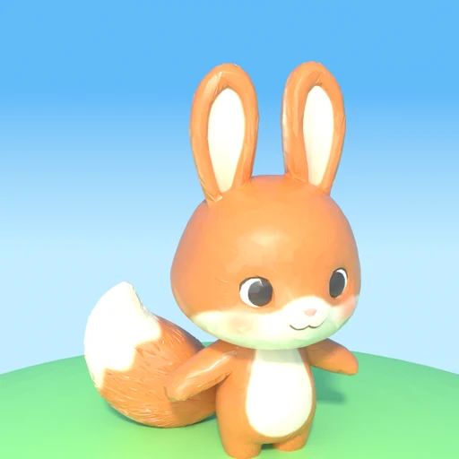
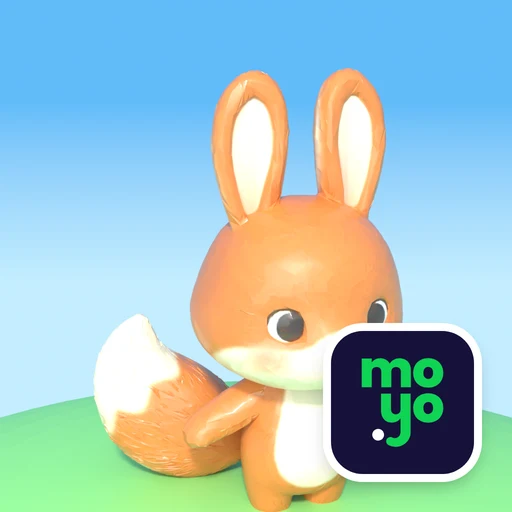
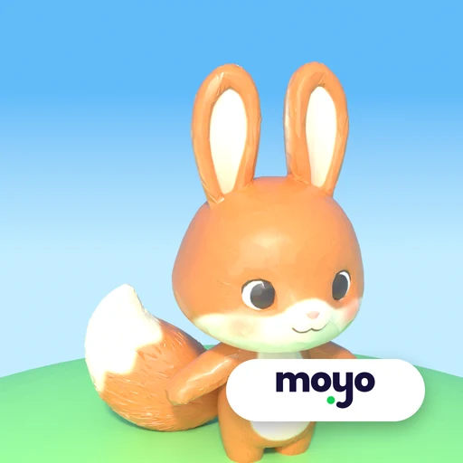
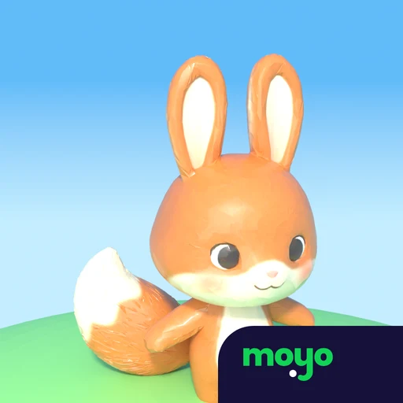
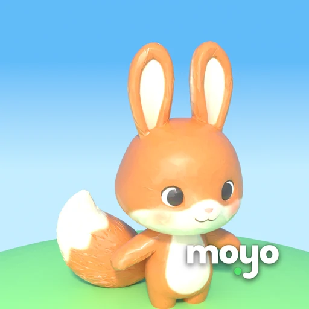
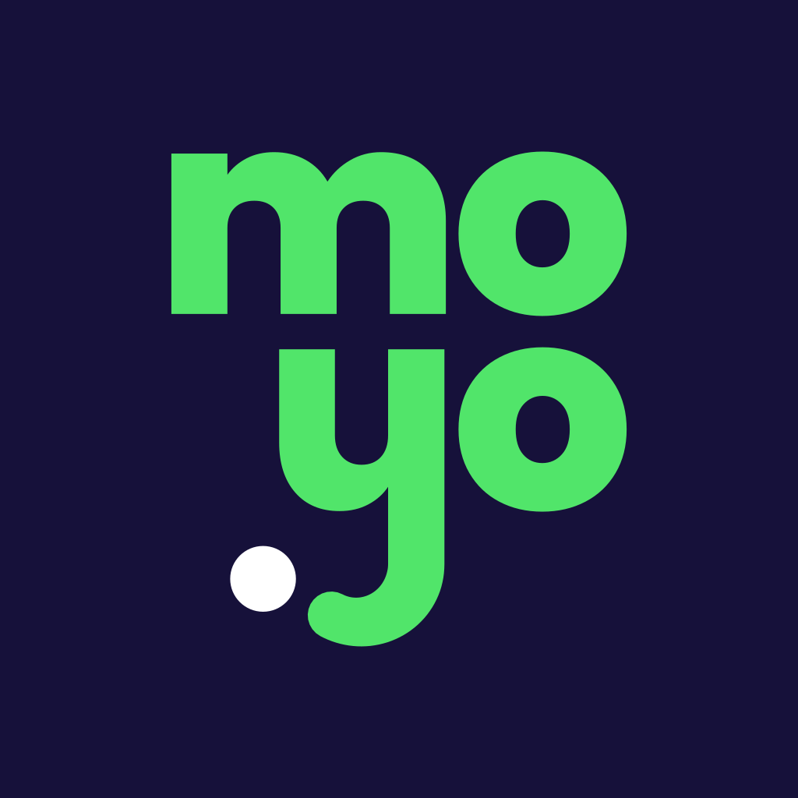
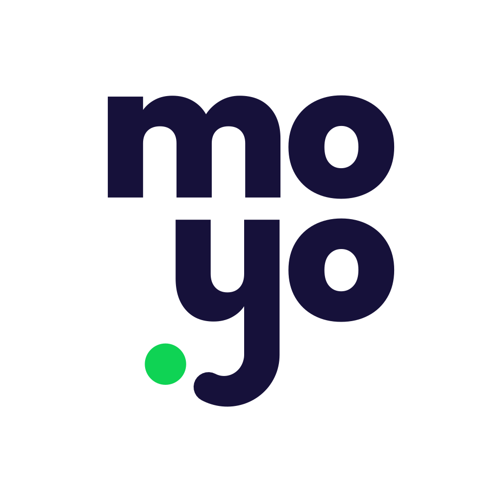
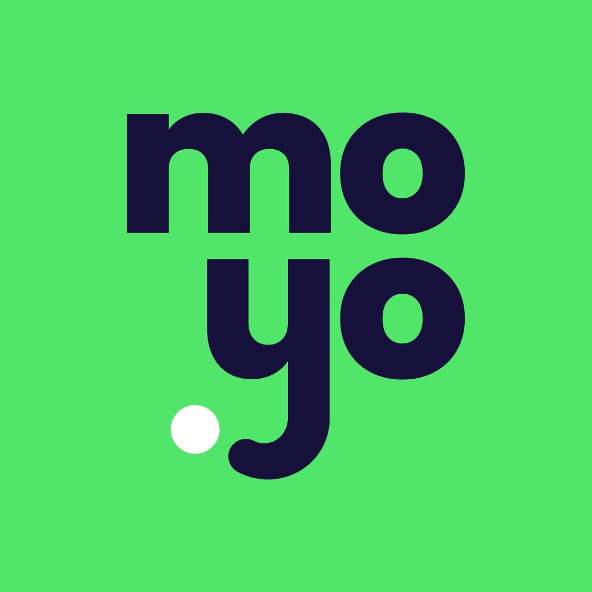

<title>Moyo Ekosistem Seçenekleri</title>
<meta name="claude:viewport-fit-sides" content="cover">
<style>
/* Düzen: tek ekranlık gezgin. Üstte sekmeler (analiz, üç alternatif, metinler, logo, benchmark), altında belge ya da sayfanın kendisi. */
:root {
  --bg: #EEEDF3; --panel: #FFFFFF; --ink: #16113A; --text: #2E2A4A; --muted: #5C5875; --line: #DEDCE6; --soft: #F7F6FA;
  --accent: #16113A; --on-accent: #FFFFFF; --good: #1C7A3E; --good-bg: #E2F5E8; --warn: #7A5410; --warn-bg: #FBF1DC; --bad: #A2303D; --bad-bg: #FBE6E8; --bezel: #16113A;
  --font: system-ui, -apple-system, "Segoe UI", Roboto, sans-serif;
}
@media (prefers-color-scheme: dark) {
  :root:not([data-theme="light"]) { --bg: #0E0B26; --panel: #19153D; --ink: #F2F1F8; --text: #D3D1E3; --muted: #A2A0B8; --line: #2F2A5A; --soft: #221E4C; --accent: #CFCBF5; --on-accent: #16113A; --good: #8FE0A6; --good-bg: #183324; --warn: #F0CB7C; --warn-bg: #3A2E14; --bad: #F2A0A8; --bad-bg: #3D1C22; --bezel: #3A3570; color-scheme: dark; }
}
:root[data-theme="dark"] { --bg: #0E0B26; --panel: #19153D; --ink: #F2F1F8; --text: #D3D1E3; --muted: #A2A0B8; --line: #2F2A5A; --soft: #221E4C; --accent: #CFCBF5; --on-accent: #16113A; --good: #8FE0A6; --good-bg: #183324; --warn: #F0CB7C; --warn-bg: #3A2E14; --bad: #F2A0A8; --bad-bg: #3D1C22; --bezel: #3A3570; color-scheme: dark; }
* { box-sizing: border-box; }
html, body { height: 100%; }
body { margin: 0; background: var(--bg); color: var(--text); font-family: var(--font); font-size: 15px; line-height: 1.55; display: flex; flex-direction: column; }
.gut { padding-left: max(16px, env(safe-area-inset-left, 0px)); padding-right: max(16px, env(safe-area-inset-right, 0px)); }
header { flex: none; background: var(--panel); border-bottom: 1px solid var(--line); padding-block: 10px; display: flex; flex-direction: column; gap: 6px; }
.row { display: flex; flex-wrap: wrap; align-items: center; gap: 8px 14px; }
h1 { font-size: 16px; font-weight: 800; color: var(--ink); margin: 0 auto 0 0; }
.seg { display: flex; gap: 4px; background: var(--bg); border-radius: 12px; padding: 4px; max-width: 100%; overflow-x: auto; }
.seg button { font: inherit; font-size: 13.5px; font-weight: 700; color: var(--muted); background: none; border: 0; border-radius: 9px; padding: 8px 11px; cursor: pointer; white-space: nowrap; min-height: 36px; }
.seg button[aria-selected="true"], .seg button[aria-pressed="true"] { background: var(--accent); color: var(--on-accent); }
button:focus-visible, a:focus-visible { outline: 3px solid #0FD354; outline-offset: 2px; }
.hint { font-size: 13px; color: var(--muted); min-height: 20px; }
.hint b { color: var(--ink); }
[hidden] { display: none !important; }
main { flex: 1; min-height: 0; display: flex; }
.view { flex: 1; min-width: 0; min-height: 0; display: flex; justify-content: center; padding-block: 12px; }
.frame { flex: 1; min-width: 0; border: 1px solid var(--line); border-radius: 14px; overflow: hidden; background: #FFFFFF; }
.view.phone .frame { flex: none; width: 390px; max-width: 100%; border: 9px solid var(--bezel); border-radius: 38px; }
iframe { width: 100%; height: 100%; border: 0; display: block; }
.doc { flex: 1; min-width: 0; overflow-y: auto; padding-block: 22px 56px; }
.doc .in { max-width: 1060px; margin: 0 auto; display: flex; flex-direction: column; gap: 22px; }
.doc h2 { font-size: 20px; font-weight: 800; color: var(--ink); margin: 0; letter-spacing: -.015em; text-wrap: balance; }
.doc h3 { font-size: 13px; font-weight: 800; color: var(--muted); margin: 0; text-transform: uppercase; letter-spacing: .06em; }
.doc p { margin: 0; max-width: 76ch; }
.lead { font-size: 16.5px; color: var(--ink); }
.box { background: var(--panel); border: 1px solid var(--line); border-radius: 16px; padding: 20px 22px; display: flex; flex-direction: column; gap: 12px; min-width: 0; }
.box.pick { border-color: var(--ink); box-shadow: 0 0 0 1px var(--ink) inset; }
.box.note { background: var(--warn-bg); border-color: transparent; }
.box.bad { background: var(--bad-bg); border-color: transparent; }
.grid3 { display: grid; grid-template-columns: repeat(3, minmax(0, 1fr)); gap: 14px; }
.grid2 { display: grid; grid-template-columns: repeat(2, minmax(0, 1fr)); gap: 14px; }
@media (max-width: 860px) { .grid3, .grid2 { grid-template-columns: 1fr; } .seg { flex-wrap: wrap; } h1 { width: 100%; } #dev { display: none; } }
ul, ol { margin: 0; padding-left: 20px; display: flex; flex-direction: column; gap: 5px; }
.tag { display: inline-block; font-size: 11.5px; font-weight: 800; letter-spacing: .04em; text-transform: uppercase; border-radius: 999px; padding: 2px 9px; background: var(--good-bg); color: var(--good); vertical-align: 2px; margin-left: 6px; }
.tbl { overflow-x: auto; }
table { width: 100%; border-collapse: collapse; font-size: 14px; }
th, td { text-align: left; padding: 9px 10px; border-bottom: 1px solid var(--line); vertical-align: top; }
th { font-size: 12px; text-transform: uppercase; letter-spacing: .05em; color: var(--muted); font-weight: 800; }
td:first-child { font-weight: 700; color: var(--ink); }
.ia { font: 600 13px/1.5 ui-monospace, SFMono-Regular, Menlo, monospace; background: var(--soft); border-radius: 10px; padding: 12px 14px; white-space: pre; overflow-x: auto; color: var(--ink); }
.copy { display: flex; flex-direction: column; gap: 10px; }
.copy .cur { border-left: 3px solid var(--muted); padding-left: 12px; }
.copy .alt { border-left: 3px solid #0FD354; padding-left: 12px; }
.copy b { color: var(--ink); }
.copy small { display: block; color: var(--muted); font-size: 13px; }
.flag { color: var(--bad); font-weight: 700; }
.icons { display: flex; flex-wrap: wrap; gap: 22px; align-items: flex-end; }
.icon { display: flex; flex-direction: column; gap: 8px; align-items: center; font-size: 12.5px; color: var(--muted); }
.icon img { border-radius: 22.5%; display: block; box-shadow: 0 8px 22px -10px rgba(0,0,0,.45); }
.store { display: flex; align-items: center; gap: 18px; background: #FFFFFF; border: 1px solid #E5E4EC; border-radius: 26px; padding: 18px 22px; max-width: 520px; }
.store img { width: 96px; height: 96px; border-radius: 22.5%; }
.store b { display: block; font-size: 28px; color: #16113A; font-weight: 800; letter-spacing: -.01em; }
.store span { font-size: 17px; color: #5C5875; }
.ref img { width: 100%; max-width: 520px; border-radius: 12px; border: 1px solid var(--line); display: block; }
.src { font-size: 13px; color: var(--muted); }
.src a, .box a { color: var(--ink); font-weight: 700; }
</style>

<header class="gut">
  <div class="row">
    <h1>Moyo ekosistem · üç yapı seçeneği</h1>
    <div class="seg" role="tablist" aria-label="Bölüm">
      <button role="tab" id="t-analiz" data-v="analiz" aria-selected="true">Analiz ve öneri</button>
      <button role="tab" id="t-a" data-v="a" aria-selected="false">A · Ebeveyn sayfası</button>
      <button role="tab" id="t-b" data-v="b" aria-selected="false">B · Tek sayfa, iki kitle</button>
      <button role="tab" id="t-c" data-v="c" aria-selected="false">C · Çatı sayfa</button>
      <button role="tab" id="t-metin" data-v="metin" aria-selected="false">Metinler</button>
      <button role="tab" id="t-logo" data-v="logo" aria-selected="false">Logo ve ikon</button>
      <button role="tab" id="t-bench" data-v="bench" aria-selected="false">Benchmark</button>
    </div>
  </div>
  <div class="row">
    <div class="seg" id="dev" role="group" aria-label="Ekran boyutu">
      <button type="button" id="d-desk" data-d="desk" aria-pressed="true">Masaüstü</button>
      <button type="button" id="d-phone" data-d="phone" aria-pressed="false">Telefon</button>
    </div>
    <div class="hint" id="hint"></div>
  </div>
</header>

<main class="gut">
  <div class="view" id="view" hidden><div class="frame"><iframe id="page" title="Seçilen alternatif" src="about:blank"></iframe></div></div>

  <div class="doc" id="analiz">
    <div class="in">
      <p class="lead"><b>Önerim C: moyoapp.com.tr ekosistemi anlatan kısa bir çatı sayfa olsun; ebeveyn ve uzman üst menüden kendi sayfalarına geçsin.</b> Ebeveyn için ek adımı iki yolla kapatırız: çatı sayfadaki ana düğme doğrudan ebeveyn kaydına gider, reklam ve mağaza trafiği doğrudan ebeveyn sayfasına gelir. Kaydırdıkça dönüp büyüyen anlatım çatı sayfanın açılışında durur. Bu düzenin en yakın örneği Joon.</p>

      <div class="box pick">
        <h2>14 Kasım: C'de senin düzeltmelerin</h2>
        <ul>
          <li><b>Ana başlık</b> daha küçük. <b>Alt başlık</b>: ilk cümle için daha sıcak üç seçenek, ikinci cümle aynı; sayfada "Önizleme · alt başlık A · B · C":
            <ol type="A"><li>"Bu yolu birlikte yürüyelim."</li><li>"Her çocuk, etrafındaki sevgi ve sabırla büyür."</li><li>"Küçük adımlar, el ele atılınca güzelleşir."</li></ol></li>
          <li><b>"zaten çalıştığınız" kalktı:</b> "Moyo çocuğunuzu ve sizi aynı rutinde buluşturur. Dilerseniz çalıştığınız uzmanı da dahil edin; hepiniz aynı platformda buluşun." ("Davet edin" yerine "dahil edin": uygulamada daveti uzman gönderir, aile onaylar.)</li>
          <li><b>1-2-3:</b> 2 ile 3 yer değişti. 1 Evde başlayın (uzman olmadan da tam çalışır) · 2 <b>Dilerseniz uzmanınızı dahil edin</b> ("İsteğe bağlı" etiketi) · 3 Seans dışında birlikte ilerleyin: eğitim gönderir, davranış kayıtlarına bakar, rutin önerir. Mercek adımı da aynı dille.</li>
          <li><b>Telefon ve iPad:</b> kaydırma anlatımı yerine üç kompakt düzen; sayfada "Önizleme · telefon/iPad düzeni" ile değiştirip bakabilirsin: <b>Sekmeler</b> (üç sekme, tek ekran) · <b>Kartlar</b> (Moyo Ekosistemi gibi yana kaydırılır) · <b>Liste</b> (üçü alt alta, küçük görsel). <b>Önerim: telefonda Sekmeler</b> (bir adım, okunur büyüklükte), <b>iPad'de Liste</b> (üç adım tek bakışta, görsel ve yazı yan yana); sayfa açılışta bunları kendiliğinden seçer. iPad'de Moyo Ekosistemi de kartlarla.</li>
          <li><b>Hepsi birlikte → Moyo Ekosistemi.</b> Web'de dönen ekranın başlığın ve alt yazının üstüne binmesi düzeldi (kısa ekranlarda, önizleme paneli gibi, ekran kendi satırına sığıyor).</li>
          <li><b>Sistemin parçaları → Ekosistemin Uygulamaları.</b> Mercek kartında "Uzman için · isteğe bağlı".</li>
          <li><b>Güven:</b> ikonlu dört kart: reklam ve satın alma yok · tek oyunculu, yabancı yok · ayrı çocuk hesabı gerekmez, oyun Moyo Ebeveyn'de oluşturduğunuz tek kullanımlık kodla bağlanır · uzman bağlantısını sonlandırabilir, hesabınızı ve verilerinizi silebilirsiniz.</li>
          <li><b>Rutin / macera:</b> sayfada her yerde "rutin"; oyun adımında ve Sorular'da kısa not: "Eklediğiniz her rutin oyunda çocuğunuz için bir macera olur."</li>
          <li><b>Moyo Oyun ikonu:</b> sağ altta küçük Moyo logosu, dört alternatif "Logo ve ikon" sekmesinde (önerim C, koyu köşe).</li>
        </ul>
      </div>

      <div class="box">
        <h2>13 Kasım: C senin notlarınla yeniden kuruldu</h2>
        <ul>
          <li><b>Başlık:</b> "…gelişim ve alışkanlık geliştirme <b>platformu</b>". Alt başlık için Türk kültürüne uygun üç seçenek; sayfada açılışın altındaki "Önizleme · alt başlık 1 · 2 · 3" ile değiştirip bakabilirsin. Önerim 1:
            <ol><li>"Çocuk büyütmek imece işidir. Moyo; evde sizi, oyunda çocuğunuzu, seansta uzmanınızı aynı rutinde buluşturur."</li>
            <li>"Evde, oyunda ve seansta el birliği. Siz rutini kurarsınız, çocuğunuz oyunda yapar, uzmanınız izninizle seanslar arasını görür."</li>
            <li>"Bir elin nesi var, iki elin sesi var. Evdeki emeğiniz ile uzmanınızın seanstaki emeği artık aynı yöne bakar."</li></ol></li>
          <li><b>1-2-3 adımları:</b> "Bugün evde başlayın, istediğinizde uzmanınızı katın". Üç adımda kim ne yapıyor açıkça yazıyor: evde başlayın, bilgiyle destekleyin, uzmanınızı dahil edin.</li>
          <li><b>Dönen ekranlar:</b> "Sorun" satırları kalktı. Görseller artık gerçek uygulama ekranları (örnek veriyle):
            <ul><li>Moyo Ebeveyn'de günlük ilerleme ve "Alışkanlıklar · son 4 hafta".</li>
            <li>Moyo Oyun'da oyunun onay penceresi ile ebeveyn telefonundaki onay ekranı yan yana; aradaki "Yaptım! → Onaylandı ✓" balonları döngüyü gösteriyor.</li>
            <li>Moyo Mercek'te tek bir bileşen büyük yazıyla: haftalık rutin tablosu.</li></ul></li>
          <li><b>Metinler:</b> nasıl yapıldığı yerine sağladığı fayda anlatılıyor, ebeveyn metinlerinde "macera" yerine "rutin" var.
            <ul><li>Mercek'in başlığı: "Zaten çalıştığınız uzman, seanslar arasını da görsün". Metinde "Moyo size uzman önermez" yazıyor.</li>
            <li>Benchmark ve nöropazarlama ilkeleri Benchmark sekmesinde, kaynaklarıyla.</li></ul></li>
          <li><b>Hepsi birlikte:</b> tam ekran, kaydırdıkça dönen bir halka. Altı adımın her birinde gerçek bir ekran öne gelir:
            <ol><li>uzmanınız eğitim gönderir,</li><li>siz eğitimi okur, öneriyi eklersiniz,</li><li>çocuğunuz oyunda yapar,</li><li>siz onaylar, zor anı kaydedersiniz,</li><li>uzmanınız evdeki haftayı görür,</li><li>öneri ertesi gün oyunda.</li></ol>
            Ailenin rolü artık yalnız onay değil: eğitim alır, davranış kaydı paylaşır, rutini kurar.</li>
          <li><b>Telefon:</b> kaydırmayla oynayan anlatım telefonda yok.
            <ul><li>Adımlar alt alta duruyor; ekrana girince bir kez dönüp büyüyor.</li>
            <li>"Hepsi birlikte" telefonda parmakla yana kaydırılan kartlar olarak geliyor; İleri / Geri düğmeleri ve "3 / 6" sayacı var.</li></ul></li>
          <li><b>İkonlar:</b> Moyo için koyu zemin ve yeşil harf, Moyo Mercek için açık zemin ve lacivert harf. Sayfa sekmesinde ve ürün kartlarında görünüyorlar. Moyo Mercek uygulamasının simgesi ve adı değişti, TestFlight derlemesi başladı. Moyo'nun simgesi ve adı için Moyo penceresine iş gitti.</li>
        </ul>
        <p>Önceki sürümün Joon eşleme tablosu tarihçe olarak aşağıda kaldı.</p>
      </div>

      <div class="box pick">
        <h2>12 Kasım: C yeniden kuruldu, Joon içeriğiyle</h2>
        <p>Çatı sayfada kitle düğmeleri ("Ebeveynim / Uzmanım") ve kapılar yok. Sayfa kim olduğunu sormadan sistemi anlatıyor: önce hangi sorun, sonra kimin işini nasıl kolaylaştırdığı, en sonda üçünün birlikte kurduğu döngü.</p>
        <p><b>Kopyalama yasağı kalktı (kullanıcı kararı 12 Kasım 2026).</b> Bölüm sırası ve cümleler joonhealth.co ana sayfasından Türkçeye aktarıldı. Bizde doğru olmayanlar alınmadı: kullanıcı sayısı ve puan, basın logoları, araştırma sonuçları, kullanıcı yorumları, koçluk ve klinik direktör. Bunları yazmak yanıltıcı reklam olur (pazarlama kuralı 1.3). Yerlerine bizim olgularımız geldi.</p>
        <div style="overflow-x:auto"><table style="min-width:560px"><thead><tr><th scope="col">joonhealth.co</th><th scope="col">Bizim çatı sayfa</th></tr></thead><tbody>
        <tr><td>"Power up your child's mental health journey"</td><td>Senin ekosistem başlığın (Joon'un başlığı sağlık iddiası taşıdığı için alınmadı)</td></tr>
        <tr><td>"It takes a village to raise a family and we're here to help you build yours."</td><td>"Bir çocuğu büyütmek bir köy ister; biz de sizinkini kurmanıza yardım etmek için buradayız."</td></tr>
        <tr><td>"Sign up for free" · "4.8/5 star supporting 1M+ families" · Featured in</td><td>"Ücretsiz deneyin" + fiyat satırı · puan, kullanıcı sayısı ve logo yok</td></tr>
        <tr><td>OUR SERVICE: "Flexible support system for the ever evolving parenting challenges" · "We'll meet you where you are…"</td><td>Hizmetimiz: "Sürekli değişen ebeveynlik zorlukları için esnek bir destek sistemi" · "Nerede olursanız olun sizi oradan alır…"</td></tr>
        <tr><td>Üç basamak: uygulamalarla kendi başına başla · gerektiğinde ebeveyn koçluğu · karmaşık zorluklarda terapi</td><td>Kendi başınıza (Moyo Ebeveyn + Moyo Oyun) · ihtiyaç duyduğunuzda uzmanınızın atadığı ebeveyn eğitimi · daha karmaşık zorluklarda uzmanınız Moyo Mercek ile</td></tr>
        <tr><td>"First, let's… Regain control back of your household" · "Bye-bye chaos and hello consistent routines!"</td><td>1. adım "Önce · Moyo Ebeveyn": "Evinizin düzenini geri kazanın" · "Kaosa elveda, düzenli rutinlere merhaba!"</td></tr>
        <tr><td>"Then we'll… Motivate your child while building long lasting life skills" · "Let us do the nagging…" + numaralı üç madde</td><td>2. adım "Sonra · Moyo Oyun": "Yaşam becerileri üzerinde çalışırken çocuğunuzu motive edin" ("kalıcı" sonuç iddiası olduğu için çıktı) · "Hatırlatmayı biz yapalım, siz çocuğunuzla ilişkinize odaklanın!" + üç madde (yapay zekâ ve ilgi alanına göre öneri bizde yok: oyun hatırlatır, ebeveyn eğitimi, yaşa uygun öneri)</td></tr>
        <tr><td>"When you need it, easily · Work with a coach that gets you"</td><td>3. adım "Gerektiğinde, kolayca · Moyo Mercek": "Sizi anlayan uzmanınızla çalışın" (koç yerine ailenin kendi uzmanı)</td></tr>
        <tr><td>OUR PROGRAM (klinik direktör, sertifikalı koçlar)</td><td>4. adım döngü + "Üç uygulama, tek düzen" (bizde direktör ve koç yok)</td></tr>
        <tr><td>Araştırma sonuçları (%30, %73…) · kullanıcı yorumları</td><td>Yok; yerine "Güven" (bugünkü Moyo sayfasından). Pilot sonucu ve izinli görüş gelince açılır.</td></tr>
        <tr><td>FAQ: hesap gerekli mi, kişisel bilgi, kendi görevim, ücret, oyun güvenli mi (+ harçlık, sonuç süresi, ayrı cihaz)</td><td>Aynı sorular bizim yanıtlarımızla + "Uzmanım yoksa", "Tanı koyar mı". Harçlık (bizde değiş tokuşla harçlık var), sonuç süresi (sonuç iddiası) ve ayrı cihaz (olgu belirsiz) alınmadı.</td></tr>
        </tbody></table></div>
        <p>Her adımda Joon'da olmayan bir "Sorun:" satırı var (senin "hangi soruna çözüm" isteğin). Yayından önce Marketing §7.1 kontrolü ve avukata telif sorusu (hukuk notları L).</p>
      </div>

      <div class="box bad">
        <h2>Bugünkü Moyo sayfasında gördüğüm sorun</h2>
        <ul>
          <li><b>Metin Joon'un ebeveyn sayfasının (joonapp.io) neredeyse birebir çevirisi:</b> dört fayda başlığı ("rutini dakikalar içinde ekleyin", "hatırlatmayı biz yapalım", "motivasyon ve odak", "birkaç haftada bağımsızlık"), üç adım ve sıralama aynı. Kopyalama yasağı 12 Kasım'da kalktı; sorun çeviri değil, Joon'a ait iddiaların da gelmesi (aşağıda).</li>
          <li><b>"Moyo kullanan çocukların %90'ı…"</b> Joon'un kendi rakamı; bizim için belgesiz bir sayı (pazarlama kuralı 1.3 ve 5.3). "Bilimsel araştırmalara dayanan", "birkaç hafta içinde" de belgesiz sonuç iddiası.</li>
          <li><b>Ebeveyne "ne kazanırım" net değil:</b> sayfa özellik ve kullanım anlatıyor ("rutini oluşturun, görevleri belirleyin"); acı nokta (her gün aynı tartışma, hep hatırlatan olmak) ve çözüm görünmüyor.</li>
          <li><b>Ekosistem görünmüyor:</b> uzman (Moyo Mercek) ve uzmanla paylaşım yalnız güvenlik bölümünde bir satır; uzman sayfasına bağlantı yok.</li>
        </ul>
      </div>

      <div class="tbl box">
        <h2>Üç seçenek yan yana</h2>
        <table>
          <thead><tr><th scope="col"></th><th scope="col">A · Ebeveyn sayfası</th><th scope="col">B · Tek sayfa, iki kitle</th><th scope="col">C · Çatı + kitle sayfaları <span class="tag">Önerim</span></th></tr></thead>
          <tbody>
            <tr><td>moyoapp.com.tr</td><td>Ebeveynin sayfası ("moyo Ebeveyn"); uzman menüden Mercek'e</td><td>Ekosistem + "Ebeveynseniz / Uzmansanız" sekmesi + ebeveyn ayrıntısı</td><td>Kısa çatı sayfa; ebeveyn /ebeveyn sayfasına, uzman Mercek'e geçer</td></tr>
            <tr><td>Açılış başlığı</td><td>Senin cümlen: "DEHB, otizm… alışkanlık geliştirme ekosistemi"</td><td>"Çocuk oynar, aile takip eder, uzman yol gösterir."</td><td>"Evdeki rutin ile seanstaki hedef aynı yerde buluşsun."</td></tr>
            <tr><td>Dönen görseller</td><td>Ebeveyn gözünden 3 adım (oyun → siz → uzmanınız)</td><td>Rol rol 3 adım (çocuk → aile → uzman)</td><td>Rol rol 3 adım (çocuk → aile → uzman)</td></tr>
            <tr><td>Ebeveyn için ek adım</td><td>Yok</td><td>Yok (sayfa uzun)</td><td>Bir tık; ana düğme doğrudan kayıt, reklam doğrudan ebeveyn sayfası</td></tr>
            <tr><td>Uzman için</td><td>Menüde "Uzmanlar için"; ekosistem ebeveyn gözünden</td><td>Sekmede 3 fayda, sonra Mercek</td><td>Kendi kapısı, eşit ağırlık</td></tr>
            <tr><td>Artı</td><td>En az iş; ebeveyn (ana alıcı) hemen ikna edilir</td><td>Tek adres, iki kitle, ekosistem görünür</td><td>En temiz yapı; her kitleye kendi dili; ileride öğretmen / okul eklenir; Mercek zaten ayrı adreste</td></tr>
            <tr><td>Eksi</td><td>Moyo "ebeveyn uygulaması" gibi kalır; uzman yanlış sayfaya düşer</td><td>Sayfa uzar, iki kitlenin mesajı sulanır</td><td>Bir sayfa fazla; çatı sayfada iki kitleye de hitap eden başlık gerekir</td></tr>
          </tbody>
        </table>
      </div>

      <div class="grid3">
        <div class="box"><h3>A · Bilgi yapısı</h3><div class="ia">moyoapp.com.tr  (moyo Ebeveyn)
├ Açılış + dönen 3 görsel
├ moyo Ebeveyn'in faydaları
├ Nasıl kullanılır · Güvenlik
├ Fiyat (ayrı sayfa)
└ menü: Uzmanlar için ↗ mercek</div></div>
        <div class="box"><h3>B · Bilgi yapısı</h3><div class="ia">moyoapp.com.tr
├ Açılış + dönen 3 görsel (roller)
├ Ebeveynseniz | Uzmansanız
├ moyo Ebeveyn ayrıntısı
├ Güvenlik · Fiyat
└ uzman ayrıntısı ↗ mercek</div></div>
        <div class="box pick"><h3>C · Bilgi yapısı</h3><div class="ia">moyoapp.com.tr  (çatı, kısa)
├ Açılış + dönen 3 görsel (roller)
├ Kim için? [Ebeveyn] [Uzman]
├ Güven
├ /ebeveyn  → bugünkü A sayfası
└ mercek.moyoapp.com.tr (uzman)</div></div>
      </div>

      <div class="grid2">
        <div class="box">
          <h2>Kaydırdıkça dönen görseller nasıl çalışmalı</h2>
          <ul>
            <li><b>Sahne yapışır, sayfa kaymaya devam eder:</b> bölüm uzun, görsel alanı ekranda sabit; kartların açısı ve boyu kaydırmanın ilerlemesinden hesaplanır. Kaydırma hızına ve yönüne dokunulmaz (kaydırmayı ele geçirme yok).</li>
            <li><b>Üç adım, adım başına yaklaşık bir ekran kaydırma:</b> kart 40° yandan, %68 boyda gelir; ortada düz ve tam boya oturup bir süre durur; sonraki gelirken geri çekilip söner. Yazı aynı anda değişir.</li>
            <li><b>Telefonda</b> açılar yarıya iner, görsel üstte, yazı altta; adım başına daha kısa kaydırma.</li>
            <li><b>Kaçış yolları:</b> altta adım düğmeleri (Çocuk · Aile · Uzman) ve "Ayrıntılara geç". "Hareketi azalt" açıksa ya da betik yoksa üç adım alt alta durur.</li>
          </ul>
        </div>
        <div class="box">
          <h2>Kimin gözünden yazılmalı</h2>
          <ul>
            <li><b>Ebeveyn sayfası (A ve C'nin /ebeveyn sayfası):</b> üç adım da ebeveyn gözünden. Uzman adımı bile "uzmanınız evde olanı görür, size eğitim gönderir" diye, ebeveynin kazancıyla yazılır.</li>
            <li><b>Çatı sayfa (B, C):</b> rol rol, tarafsız ses: "Çocuk oynar · Aile takip eder · Uzman yol gösterir".</li>
            <li><b>Moyo Mercek:</b> uzman gözünden (bugünkü gibi).</li>
            <li>Senin "terapistinizi sürece dahil edin" taslağın ebeveyn sayfası için doğru ses; ayrıntı ve öneriler "Metinler" sekmesinde.</li>
          </ul>
        </div>
      </div>
      <div class="box note">
        <h2>Bilmen gerekenler</h2>
        <ul>
          <li>Mesajında yalnız ikon görseli geldi. "Görseller" olarak Moyo sayfasının açılışındaki cihaz gösterimini (çocuğun tableti, ebeveynin telefonu) ve uzman panelini kullandım; başka bir görseli kastettiysen gönder.</li>
          <li>Açılışta hastalık adı (DEHB, otizm) avukat dosyasındaki "takip platformu" konumlanmasına (karar 2) bağlı; şimdilik üst etikette tuttum.</li>
          <li>Ürün adları: Moyo Oyun (çocuk), Moyo Ebeveyn (aile), Moyo Mercek (uzman). Telefonda ebeveyn uygulamasının adı "Moyo" kalabilir; sayfa başlıklarında "moyo Ebeveyn" kullanılır.</li>
          <li>Bu yalnız önizleme; hiçbir sayfa değişmedi. Moyo sayfasını Moyo penceresi yapar; çatı sayfa için karar gelince işler bölüşülür.</li>
        </ul>
      </div>
    </div>
  </div>

  <div class="doc" id="metin" hidden>
    <div class="in">
      <p class="lead">Her yerde aynı kural: <b>önce acı nokta, sonra çözüm; özellik ve kullanım anlatılmaz.</b> Görseldeki açıklayıcı içerik (kim, ne görür) başlığın altında küçük yazıyla durur.</p>
      <div class="box copy">
        <h2>Açılış başlığı</h2>
        <div class="cur"><b>Senin taslağın:</b> "DEHB, otizm ve davranışsal zorluklar yaşayan çocuklar için gelişim ve alışkanlık geliştirme ekosistemi"<small>Kitleyi net söylüyor. "Gelişim" sonuç vaadi gibi okunabilir; "ekosistem" ebeveyn için soyut. A'da aynen kullandım.</small></div>
        <div class="alt"><b>1.</b> "Çocuk oynar, aile takip eder, uzman yol gösterir."<small>Ekosistemi tek cümlede anlatır; çatı sayfa için (B). Kitle üst etikette.</small></div>
        <div class="alt"><b>2.</b> "Evdeki rutin ile seanstaki hedef aynı yerde buluşsun."<small>Acı nokta: ev ile seans kopuk. İki kitleye de hitap eder (C).</small></div>
        <div class="alt"><b>3.</b> "DEHB, otizm ve davranışsal zorluklar yaşayan çocuklar ve aileleri için alışkanlık ekosistemi"<small>Senin cümlenin yumuşatılmışı: "gelişim" çıktı, "aileleri" girdi.</small></div>
      </div>
      <div class="box copy">
        <h2>Adım 1 · Oyun (çocuk)</h2>
        <div class="cur"><b>Senin taslağın (Moyo Ebeveyn için):</b> "Çocuğunuzun günlük rutinlerini ve sorumluluklarını eğlenceli bir oyuna dönüştürün. Dikkatini toplamasına, görevlerini tamamlamasına ve günlük alışkanlıklar kazanmasına yardımcı olun."<small>Anlaşılır, ama çözümü özellik diliyle anlatıyor; acı nokta yok. <span class="flag">"Dikkatini toplamasına yardımcı olun" dikkat iddiası sayılır</span> (pazarlama kuralı 1.3: "dikkat eksikliğini giderir" yasak; dikkat üzerine sonuç vaadi riskli).</small></div>
        <div class="alt"><b>1.</b> "Söylemekten yorulduysanız, oyun hatırlatsın." · <small>Altında: "Günlük rutinler ve sorumluluklar oyunda maceraya dönüşür. Çocuğunuz görevini tamamladıkça sanal dostu Okti büyür."</small></div>
        <div class="alt"><b>2.</b> "Her sabah aynı tartışma yerine bir oyun." · <small>Altında aynı açıklama.</small></div>
        <div class="alt"><b>3.</b> "Rutin bir kavga değil, bir oyun olsun." · <small>Çatı sayfada tarafsız hâli: "Rutin, bir oyuna dönüşür."</small></div>
      </div>
      <div class="box copy">
        <h2>Adım 2 · Ebeveyn uygulaması</h2>
        <div class="alt"><b>1.</b> "Hatırlatan değil, onaylayan siz olun." · <small>Altında: "Görev tamamlanınca telefonunuza bildirim gelir; bir dokunuşla onaylarsınız. Günü, haftayı ve ayı tek bakışta görürsünüz."</small></div>
        <div class="alt"><b>2.</b> "Evdeki ilerlemeyi tahmin etmeyin, görün."</div>
        <div class="alt"><b>3.</b> Çatı sayfa için: "Evdeki emek görünür olur."</div>
      </div>
      <div class="box copy">
        <h2>Adım 3 · Uzman (ebeveyn sayfasında)</h2>
        <div class="cur"><b>Senin taslağın:</b> "Terapistinizi de sürece dahil edin. Size davranışlar müdahale eğitimleri atasın, çocuğunuzun seans dışındaki davranışlarını takip edebilsin, evdeki davranış uygulamalarını analiz ederek klinik süresini güçlendirsin."<small>Ses doğru (ebeveyn gözü). Ama üç fiil sıralayıp özelliği anlatıyor. <span class="flag">"Müdahale" klinik jargon; "klinik süreyi güçlendirsin" sonuç iddiası.</span> İzin vurgusu eksik (paylaşım yalnız ebeveyn izniyle). Platform her uzmana açık; "terapist" yerine "uzmanınız".</small></div>
        <div class="alt"><b>1.</b> "Seans bitince süreç durmasın." · <small>Altında: "İzin verirseniz uzmanınız evdeki kayıtları görür ve size uygun ebeveyn eğitimi gönderir. Paylaşımı istediğiniz an durdurursunuz."</small></div>
        <div class="alt"><b>2.</b> "Evde olanı uzmanınıza baştan anlatmak zorunda kalmayın."</div>
        <div class="alt"><b>3.</b> "Uzmanınız seans aralarında da yanınızda." · <small>Çatı sayfada tarafsız hâli: "Seans dışındaki hafta da görünür."</small></div>
      </div>
      <div class="box copy">
        <h2>Uzman kapısı (çatı sayfada)</h2>
        <div class="alt"><b>1.</b> "Seans dışındaki haftayı görün." · <small>Ailenin izniyle evdeki kayıtlar panelinizde · ebeveyn eğitimini atarsınız, uygulama hatırlatır · rapor ve ilerleme notu kayıtlardan hazır.</small></div>
        <div class="alt"><b>2.</b> "Ev programınız aileye ulaşsın, evden gelen kayıt size."</div>
      </div>
    </div>
  </div>

  <div class="doc" id="logo" hidden>
    <div class="in">
      <div class="box pick">
        <h3>Yeni · Moyo Oyun ikonu, sağ altta küçük Moyo logosu (karar bekliyor)</h3>
        <p>Oyunun bugünkü ikonu değişmeden; köşeye ailenin uygulamasıyla aynı imza. iPhone köşeleri yuvarlattığı için logo köşeden içeride duruyor. 60 piksel, telefonun ana ekranındaki boyuttur.</p>
        <div class="icons">
          <div class="icon"><span>Bugün</span></div>
          <div class="icon"><span><b>A</b> · Rozet (Moyo ikonu)</span></div>
          <div class="icon"><span><b>B</b> · Beyaz etiket</span></div>
          <div class="icon"><span><b>C</b> · Koyu köşe</span></div>
          <div class="icon"><span><b>D</b> · Yalın yazı</span></div>
        </div>
        <h3>Ana ekranda, üç uygulama yan yana (60 px)</h3>
        <div class="icons">
          <div class="icon"><span>Moyo</span></div>
          <div class="icon"><span>Moyo Mercek</span></div>
          <div class="icon"><span>Oyun · A</span></div>
          <div class="icon"><span>Oyun · B</span></div>
          <div class="icon"><span>Oyun · C</span></div>
          <div class="icon"><span>Oyun · D</span></div>
        </div>
        <p><b>Önerim C (koyu köşe):</b> iPhone'un köşe kavisini izleyen bir şerit gibi duruyor, lacivert üstünde yeşil "moyo" markayla aynı; 60 pikselde de kabaca okunuyor ve karakteri kapatmıyor (yalnız çimen ve gövde kenarı). A markaya en yakın ama "mo/yo" 60 pikselde okunmuyor, ikon içinde ikon bildirim rozeti gibi duruyor ve ebeveyn uygulamasının ikonuyla karışabilir. D açık zeminde silik kalıyor (filigran gibi), B karakterin gövdesini kapatıyor. Not: Apple ikonlarda yazıyı gerekmedikçe önermiyor; marka imzası şart değilse bugünkü hâli en sade olanı. Seçilen alternatifin 1024 piksellik dosyasını Oyun penceresi ikon olarak atar (üreteç <code>tools/logo/oyun_rozet.js</code>).</p>
      </div>
      <p class="lead">Paylaştığın tasarım: iki satır, <b>"mo" üstte, "yo" altta, sağa hizalı</b>. Aşağıda aynı düzen, seçtiğin logo harfleriyle (C Top, ayarlı) ve üç renk takımıyla.</p>
      <div class="grid2">
        <div class="box ref"><h3>Senin paylaştığın</h3><p class="src">Bu görseldeki y kuyruğu Moyo penceresinin A Kıvrım çizimi; aşağıdakiler senin seçtiğin C Top.</p></div>
        <div class="box"><h3>Mağaza kartı · seçilen harflerle</h3><div class="store"><div><b>Moyo</b><span>Yakında App Store'da</span></div></div><div class="store"><div><b>Moyo</b><span>Yakında App Store'da</span></div></div></div>
      </div>
      <div class="box">
        <h3>Üç renk takımı · 180 ve 60 piksel (ana ekran boyutu)</h3>
        <div class="icons">
          <div class="icon"><span>Koyu zemin · yeşil harf</span></div>
          <div class="icon"><span>60 px</span></div>
          <div class="icon"><span>Yeşil zemin · lacivert harf</span></div>
          <div class="icon"><span>60 px</span></div>
          <div class="icon"><span>Açık zemin · lacivert harf</span></div>
          <div class="icon"><span>60 px</span></div>
        </div>
        <p>İki satır sözcüğü iri gösterdiği için 60 pikselde tek satırdan çok daha iyi okunuyor. 60 pikselde top küçük kalıyor; ikonda topu logodakinden biraz büyük çizmek (ikon kuralı olarak) okunurluğu artırır. <b>Önerim:</b> Moyo için iki satır; sen yeşil zemin + lacivert harfe yatkındın, koyu zemin + yeşil harf de güçlü. Moyo Mercek ikonu Moyo'dan ayrışmalı: aynı iki satır, açık zemin + lacivert harf (uzman panelinin kendisiyle aynı).</p>
      </div>
    </div>
  </div>

  <div class="doc" id="bench" hidden>
    <div class="in">
      <div class="box pick arastirma"><p class="lead"><b>13 Kasım: ebeveyn metinleri için benchmark ve nöropazarlama araştırması.</b> Çatı sayfanın (C) yeni metinleri buradan seçildi. Kural: başkasının metni kullanılabilir, ama bize ait olmayan rakam, araştırma sonucu, yorum ve sonuç iddiası kullanılmaz.</p><h2>Moyo çatı sayfası: benchmark, ilkeler ve metin önerileri</h2>
<p>13 Kasım 2026 · Koordinatör/Marketing için araştırma notu · taslak, yayından önce <code>hukuk/45</code> §7.1 kontrolü</p>
<p>---</p>
<h3>0. Kısaca: önerilen metinler</h3>
<div style="overflow-x:auto"><table style="min-width:640px"><thead><tr><th scope="col">Bölüm</th><th scope="col">Önerilen (★)</th></tr></thead><tbody><tr><td>Üst etiket</td><td>DEHB · Otizm · Davranışsal zorluklar</td></tr><tr><td>H1</td><td><b>Düzenli alışkanlıklar ve sakin günler için ebeveyn, çocuk ve uzman platformu</b></td></tr><tr><td>Alt başlık</td><td><b>Çocuk büyütmek imece işidir. Moyo; evde sizi, oyunda çocuğunuzu, seansta uzmanınızı aynı rutinde buluşturur.</b></td></tr><tr><td>Giriş satırı başlığı</td><td><b>Bugün evde başlayın, istediğinizde uzmanınızı katın</b></td></tr><tr><td>1</td><td><b>Evde başlayın:</b> Rutini siz kurarsınız, çocuğunuz oyunda adım adım yapar.</td></tr><tr><td>2</td><td><b>Bilgiyle destekleyin:</b> Uzmanınızın gönderdiği kısa eğitimlerle davranışları anlamayı ve evde neler yapabileceğinizi öğrenirsiniz.</td></tr><tr><td>3</td><td><b>Uzmanınızı dahil edin:</b> İzninizle, zaten çalıştığınız uzman seanslar arasındaki günleri de görür.</td></tr><tr><td>Moyo Ebeveyn</td><td>Etiket: Moyo Ebeveyn · telefonunuzda. Başlık: <b>Her gün aynı saatte, aynı sırayla.</b> Metin: Sabah, akşam ve okul hazırlığı rutinini yaşa uygun hazır listelerden bir kez kurarsınız; her gün çocuğunuzun oyununa gelir. Gün içinde ona destek olur, zorlandığı anları kısa bir davranış kaydıyla not eder, günü, haftayı ve ayı tek yerden görürsünüz.</td></tr><tr><td>Moyo Oyun</td><td>Etiket: Moyo Oyun · çocuğunuzun tabletinde. Başlık: <b>Hatırlatma oyundan gelir, onay sizden.</b> Metin: Çocuğunuz bugünkü rutinini oyunda adım adım görür; dostu Okti ona eşlik eder. Reklam, satın alma ve çocuk hesabı yok. Liste: (1) Çocuğunuz işi bitirince oyunda "Yaptım"a dokunur. (2) Telefonunuza bildirim gelir: "Nazlı, 'Diş fırçalama'yı bitirdi." Tek dokunuşla onaylarsınız. (3) Onayınızla çocuğunuz İnci toplar, Okti büyür; İncileri sizin belirlediğiniz ödüllerle değiştirebilir.</td></tr><tr><td>Moyo Mercek</td><td>Etiket: Moyo Mercek · uzmanınızın panelinde. Başlık: <b>Zaten çalıştığınız uzman, seanslar arasını da görsün.</b> Metin: Uzmanınız davet gönderir, siz onaylarsınız; o andan sonra evdeki rutinleri, davranış kayıtlarını ve eğitimdeki ilerlemeyi görür, bir sonraki seansa bu kayıtlarla hazırlanır. Paylaşımı istediğiniz an durdurursunuz; Moyo size uzman önermez.</td></tr><tr><td>Hepsi birlikte</td><td>Başlık: <b>Uzmanın önerisi, yarının rutini.</b> Adımlar: Uzmanınız eğitim gönderir, rutin önerir. → Siz eğitimi okur, rutini eklersiniz. → Çocuğunuz oyunda yapar, "Yaptım"a dokunur. → Siz onaylar, zorlanılan anı kaydedersiniz. → Uzmanınız evdeki haftayı görür, seansa hazırlanır. → Eklediğiniz yeni öneri ertesi gün oyunda. Kapanış: <b>Böylece seansta konuşulan seansta kalmaz; eklediğiniz her öneri ertesi gün evde, oyunda devam eder.</b></td></tr></tbody></table></div>
<p>İlk beş ilke (ayrıntı §4): (1) okuma kolaylığı (kısa, tanıdık Türkçe; "ekosistem" yok), (2) somut sahne ve görsel (sonucu değil süreci gösterir), (3) ikinci kişi, şimdiki zaman, süreç canlandırma ("siz kurarsınız, çocuğunuz yapar"), (4) korku ve kayıp yerine güvence ve yapabilirlik, (5) kontrol sizde ve tek cümlelik "neden".</p>
<p>---</p>
<h3>1. Bu işte geçerli kurallar (<code>ortak/hukuk/45</code>)</h3>
<ul>
<li><b>§1.3 / 1.4:</b> tedavi, iyileştirme, "kanıtlanmış", oran, süre ("haftalar içinde") yok. Araştırmaya dayanan cümle ürünün etkisi gibi sunulmaz. Hedeflenen fayda yalnız <b>amaç</b> ("… için") ya da <b>ürünün yaptığı</b> ("her gün aynı saatte, aynı sırayla gelir") olarak yazılır. "Çocuğunuz düzenli olur", "evinizin düzenini geri kazanın", "daha sakin sabahlar" (söz olarak) kullanılmaz.</li>
<li><b>§2.1:</b> çocuğa doğrudan çağrı yok; bütün metin ebeveyne "siz" diye yazılır.</li>
<li><b>§2.3:</b> İnci için <b>"kazan", "para"</b> kullanılmaz; "İnci toplar / İnci gelir" denir, harçlık örneği verilmez ("ekran süresi gibi" yeterli). Ödülü ebeveyn belirler; platform ödülün tarafı değildir (<code>hukuk/00-olgular</code> Güneş Taşı maddesi).</li>
<li><b>§5.2 / 5.3:</b> yorum, başarı hikâyesi, kullanıcı sayısı yok.</li>
<li><b>§6.1:</b> platform uzman önermez, danışan ya da uzman eşleştirmez. Mercek metni "zaten çalıştığınız uzman" der.</li>
<li><b>§6.2:</b> "uzman onaylı", "terapistlerin önerdiği" yok (Joon'un "THERAPIST-APPROVED" etiketi alınmaz).</li>
<li>Rakamlar: "16 hazır rutin" ve "yaklaşık 300 görev şablonu" bizim ürün olgumuz, belgelenebilir; yine de katalog değişeceği için metinde "yaşa uygun hazır rutinler" demek daha güvenli.</li>
</ul>
<p>---</p>
<h3>2. Benchmark (12 ürün)</h3>
<p><b>Erişim notu:</b> bu oturumun ağında yalnız joonapp.io, joonhealth.co, apps.apple.com / itunes.apple.com ve nngroup.com açık. goally.com / getgoally.com, tiimoapp.com, brili.com, routinery.app, mightier.com, classdojo.com ve otsimo.com engelli. Bunlar için App Store açıklaması (iTunes arama API'si, 13 Kasım 2026) ve arama sonuçlarındaki sayfa metni kullanıldı. Görsel düzeni yalnız Joon sayfalarında sayfa kodundan doğrulandı; ötekilerde "doğrulanmadı" yazıyor.</p>
<div style="overflow-x:auto"><table style="min-width:640px"><thead><tr><th scope="col">#</th><th scope="col">Ürün (kaynak)</th><th scope="col">Başlık / alt başlık (birebir)</th><th scope="col">Rutin faydasını nasıl anlatıyor</th><th scope="col">Döngüyü nasıl gösteriyor</th><th scope="col">Al</th><th scope="col">Kaçın</th></tr></thead><tbody><tr><td>1</td><td><b>Joon</b> (joonapp.io, doğrudan)</td><td>H1: "The behavior improvement app for kids with ADHD, ODD, Autism, or any struggling child." Alt: "Meet the video game that makes daily routines &amp; tasks fun for kids (ages 6 - 12)."</td><td>"No more nagging, we do the reminding"; "Assign daily tasks and chores as Quests then let the video game do the rest"</td><td>Açılışta tek telefon, "How Joon works" 3 numaralı adım; ebeveyn onayı sayfada anlatılmıyor</td><td>Hatırlatmayı uygulamaya bırakma ("we do the reminding"); "gerisini oyun yapar" ritmi</td><td>"90% of kids … complete all tasks", "Teach independence in a matter of weeks", "30% reduction in disruptive behaviors", "1 million+ families", "THERAPIST-APPROVED" (hepsi §1.3/5.3/6.2)</td></tr><tr><td>2</td><td><b>Joon Health</b> (joonhealth.co, doğrudan)</td><td>H1: "Power up your child's mental health journey". Alt: "It takes a village to raise a family and we're here to help you build yours."</td><td>Üç kademe: "Start independently…", "parent coaching when you need it", "therapy for more complex challenges"; "First, let's… Regain control back of your household / Bye-bye chaos and hello consistent routines!"; "Then we'll… Let us do the nagging so you can focus on relationship building with your child!"</td><td>"Then we'll" bölümünde telefon görseli + 1-2-3 numaralı sekme ("Tap below to see how!"); öteki iki bölüm yalnız çizim</td><td>"Önce… / Sonra… / Gerektiğinde…" sıralaması (bizim giriş satırı)</td><td>"mental health journey" (sağlık çerçevesi), koç/terapist yönlendirme (bizde yok), "Bye-bye chaos" (Türkçesi "Kaosa elveda" bayağı ve sonuç vaadi)</td></tr><tr><td>3</td><td><b>Joon Health uzman sayfası</b> (joonhealth.co/for-providers, doğrudan)</td><td>H1: "The ABA parent training platform that drives home-program adherence and captures the data to prove it." Alt: "Assign learning modules, track caregiver-collected behavior data, and get parents to actually follow through."</td><td>Uzmana: "Engage parents outside of sessions… collecting ABC data when no clinician is present"; "see exactly what triggered target behaviors and which response strategies worked"</td><td>5 numaralı adım (program kur → aile uygulamasına gider → ABC verisi gelir → ilerleme izlenir → oyun ve jeton eklenir)</td><td>"uzman yokken evde olan" fikri (Mercek başlığımız buradan); seansa hazırlık ("best prepare for follow-up sessions", bir yorumdan)</td><td>"Save 4-6hrs/wk", "2,500+ ABA clinics", "drives adherence"</td></tr><tr><td>4</td><td><b>Joon for teachers</b> (joonapp.io/for-teachers, doğrudan)</td><td>H1: "Include Joon in your classroom toolkit"</td><td>Öğretmen davranış önerir, ebeveyn evde ekler, çocuk oynar, öğretmen panoda görür</td><td>Metinde adım yok</td><td><b>Öneren uzman, ekleyen ebeveyn</b> ayrımı: bizim "karar sizin" kuralımızla aynı</td><td>"significantly motivated", "Improved behavior &amp; focus"</td></tr><tr><td>5</td><td><b>Goally</b> (App Store + arama)</td><td>Ana sayfa (arama özeti): "We make bedtime &amp; mornings way less stressful with a safe tablet built for kids." Bir inceleme başlığı: "You make the rules, we do the work."</td><td>Günün belli saatini adlandırıyor (yatma, sabah); "help parents stop nagging their kids"</td><td>Çocuk tableti + ebeveyn uygulaması ("for parents and the rest of the kid's team"); görsel doğrulanmadı</td><td>Sabah/akşam gibi <b>somut zaman dilimi</b>; "kid's team" (büyükanne, öğretmen, terapist aynı ekipte); "Kids win points…, parents choose what they can buy" ödül düzeni</td><td>"way less stressful" (sonuç iddiası), "Trusted by 100,000+ Families"</td></tr><tr><td>6</td><td><b>Cleo Routines</b> (App Store)</td><td>"Parents set up the routines once. Kids own them every day."</td><td>"no reading required", "Celebrates every win"</td><td>Doğrulanmadı</td><td><b>Rol ayrımını tek satırda</b> söyleme: bizim "Siz kurarsınız, çocuğunuz oyunda yapar"</td><td>"stress-free for parents"</td></tr><tr><td>7</td><td><b>Routinery</b> (App Store)</td><td>"You've checked the boxes. The day still didn't happen." / "Routinery tracks your routines and then runs them with you."</td><td>"WHY IT WORKS: Starting gets easier… Nothing to decide mid-run… Wins come back often" (iddia değil, mekanizma)</td><td>Doğrulanmadı</td><td>Tanıdık bir an ile açılış + <b>mekanizmayı anlatan "neden"</b></td><td>"Best ADHD App of 2025", "5 million downloads"</td></tr><tr><td>8</td><td><b>Tiimo</b> (arama + App Store)</td><td>"A visual AI planner built for real life"; Hakkında: "Designed for brains that work differently"</td><td>"helps reduce mental load and makes it easier to follow through"</td><td>Doğrulanmadı</td><td>Kusur dili yerine <b>"farklı çalışan zihin"</b> gibi saygılı dil</td><td>ödül rozetleri, "4+ Million downloads", "reduce mental load" (iddia)</td></tr><tr><td>9</td><td><b>Brili</b> (App Store + Easterseals inceleme)</td><td>App Store: "visual planner and timekeeper that helps manage and gamify your tasks"</td><td>Ebeveyn modunda kurulur, çocuk oyun gibi görür; "what's next, how much time left"</td><td>Ebeveyn modu / çocuk modu; doğrulanmadı</td><td>Sıradaki adımı ve kalan zamanı gösteren <b>somut arayüz</b></td><td>"Brili is based on the latest ADHD research", "problem behaviors are lessened"</td></tr><tr><td>10</td><td><b>Mightier</b> (App Store + arama)</td><td>Ebeveyn uygulaması: "provides caregivers with insights, real time data, and progress tracking"; uzman sayfası: "take Mightier home so they can play and practice strategies between sessions"</td><td>Oyun, ebeveyn uygulaması ve klinisyen birlikte</td><td>Çocuk oyunu + nabız bandı + ebeveyn uygulaması; doğrulanmadı</td><td><b>"seanslar arasında evde pratik"</b> çerçevesi</td><td>"87% of parents report improvement in 90 days", "Tested and proven", Harvard/Boston Children's otoritesi</td></tr><tr><td>11</td><td><b>ClassDojo / Dojo Islands</b> (App Store + arama)</td><td>"more answers to 'how was school today?'"; "at school, home, and everywhere in between"; Islands: "Families control who kids can play with. No open chat… No ads."</td><td>Okul ↔ ev bağı</td><td>Doğrulanmadı</td><td>Tanıdık <b>soruyla</b> kanca; bizde ters çevrilir: uzman "Bu hafta evde nasıl geçti?" diye sorduğunda cevap hazır. Güven maddeleri düz fiille</td><td>"45 million families", "join millions"</td></tr><tr><td>12</td><td><b>S'moresUp / Homey</b> (App Store)</td><td>S'moresUp: "Make chores fun. Share the work." / "Spend less time reminding and more time doing things together."</td><td>İş bölümü, hatırlatma yükü</td><td>Doğrulanmadı</td><td>İki kısa fiilli ritim</td><td>"Best Chores App", para/harçlık vurgusu (§2.3)</td></tr><tr><td>(+)</td><td><b>Bend Health</b> (arama)</td><td>"works with your pediatrician or primary care provider"; "connect the entire team"</td><td>Var olan bakım ekibiyle çalışma</td><td>–</td><td><b>Var olan ekiple çalışma</b> dili</td><td>Eşleştirme ve sigorta mesajları</td></tr><tr><td>(–)</td><td><b>Grow Therapy / Manatee</b> (Grow doğrudan, Manatee App Store)</td><td>Grow: "The right therapist for you is already on Grow"; Manatee: "match with a licensed therapist as soon as TODAY"</td><td>Uzman bulma</td><td>–</td><td>Ne yapmadığımızı netleştirmek için karşı örnek</td><td>Eşleştirme dili bizde yanıltıcı olur (§6.1); Manatee'nin "surviving… not thriving!" gibi bayağı tonu</td></tr></tbody></table></div>
<h4>Örüntüler</h4>
<ol>
<li><b>Hatırlatma yükünü almak</b> en yaygın fayda kancası (Joon, Joon Health, Goally, S'moresUp). İddia içermeden yazılabiliyor: "hatırlatma oyundan gelir".</li>
<li><b>Rolü tek satırda söylemek</b> (Cleo: "Parents set up… Kids own…") ürünün "kim neyi nerede yapar" sorusunu en hızlı çözen kalıp.</li>
<li><b>Somut zaman dilimi</b> (Goally: yatma, sabah) soyut "düzen" kelimesinden daha akılda kalıcı.</li>
<li><b>Uzmanı anlatırken iki yol var:</b> eşleştirme (Grow, Manatee, Joon Health koç) ya da var olan ekip (Goally "kid's team", Bend, Mightier "between sessions", Joon for teachers). Bize uyan yalnız ikincisi.</li>
<li>Başarılı sayfaların neredeyse hepsi sayı, oran, ödül rozeti ve yorumla güven kuruyor; biz bunları kullanamıyoruz. Yerine <b>doğrulanabilir olgularla güven</b> kuruyoruz: reklam yok, satın alma yok, çocuk hesabı yok, yabancıyla mesaj yok, paylaşımı siz durdurursunuz, oyunda "kaçırdın" ya da kırmızı çarpı yok (<code>akislar.md</code> rutin kartı: "başarısızlık durumu yok").</li>
<li><b>Döngü görseli:</b> Joon ailesi numaralı adım + telefon kullanıyor. Bizim taslaktaki üç cihaz (ebeveyn telefonu, çocuk tableti, uzman paneli) bundan güçlü. Öneri: <b>aynı rutin adımını</b> ("Diş fırçalama") cihazdan cihaza taşımak: uzman önerir → ebeveyn ekler → oyunda kart → "Yaptım" → bildirim → panelde hücre. Bu, bir öğeyi takip ettirerek okuma yükünü azaltır.</li>
</ol>
<p>---</p>
<h3>3. Mevcut taslakta (<code>ekosistem/c.html</code>) değişmesi gerekenler</h3>
<div style="overflow-x:auto"><table style="min-width:640px"><thead><tr><th scope="col">Şimdiki</th><th scope="col">Sorun</th><th scope="col">Yerine</th></tr></thead><tbody><tr><td>"…gelişim ve alışkanlık geliştirme ekosistemi"</td><td>"ekosistem" itici (kullanıcı); "gelişim" sağlık sonucu çağrıştırıyor</td><td>"…için ebeveyn, çocuk ve uzman platformu"</td></tr><tr><td>"Bir çocuğu büyütmek bir köy ister…"</td><td>Joon'un cümlesi; kullanıcı istemiyor</td><td>§5a alt başlıklar</td></tr><tr><td>"Evinizin düzenini geri kazanın" / "Kaosa elveda, düzenli rutinlere merhaba!"</td><td>Sonuç vaadi; Joon'dan çeviri, bayağı</td><td>"Her gün aynı saatte, aynı sırayla."</td></tr><tr><td>"Maceraları ve … rutinleri kurun"</td><td>"macera" yerine "rutin" (kullanıcı)</td><td>"rutin", tek iş için "adım"</td></tr><tr><td>"tamamlanınca telefonunuza bildirim gelir, bir dokunuşla onaylarsınız" (Ebeveyn adımında)</td><td>Nasıl yapılır dili; kimin neyi nerede tamamladığı belirsiz</td><td>Oyun adımındaki 3 maddelik döngü listesi</td></tr><tr><td>"Hatırlatmayı biz yapalım, siz çocuğunuzla ilişkinize odaklanın!"</td><td>Joon çevirisi; ilişki sonucu ima ediyor</td><td>"Hatırlatma oyundan gelir, onay sizden."</td></tr><tr><td>"Sizi anlayan uzmanınızla çalışın"</td><td>Joon'un "coach that gets you" çevirisi; uzman verdiğimizi düşündürüyor (§6.1)</td><td>"Zaten çalıştığınız uzman, seanslar arasını da görsün."</td></tr><tr><td>"Moyo ekosistemi" (sekme adı)</td><td>"ekosistem"</td><td>"Moyo nasıl çalışır" ya da "Hepsi birlikte"</td></tr><tr><td>"Sürekli değişen ebeveynlik zorlukları için esnek bir destek sistemi"</td><td>Joon'dan çeviri, soyut</td><td>§5b giriş satırı</td></tr></tbody></table></div>
<p>---</p>
<h3>4. Davranış odaklı metin ilkeleri (yorgun ve kaygılı ebeveyn için)</h3>
<div style="overflow-x:auto"><table style="min-width:640px"><thead><tr><th scope="col">#</th><th scope="col">İlke</th><th scope="col">Ne der</th><th scope="col">Bizde nasıl</th><th scope="col">Kısıtla çatışma</th><th scope="col">Kaynak</th></tr></thead><tbody><tr><td>1</td><td><b>Okuma kolaylığı (processing fluency)</b></td><td>Kolay işlenen metin daha doğru, daha güvenilir ve daha sevimli bulunur; gereksiz karmaşık sözcük yazanı daha az akıllı gösterir. Web'de okur tarar; kısa ve nesnel metin, tanıtım dilinden daha iyi anlaşılır.</td><td>Kısa cümle, satır başına tek fikir, gündelik sözcük (rutin, sabah, çanta); "ekosistem", "ABC" yerine "davranış kaydı".</td><td>Yok. Dikkat: kolaylık doğruluk algısını da artırır, bu yüzden akıcı cümle <b>iddia taşımamalı</b>.</td><td>Alter &amp; Oppenheimer 2009; Reber &amp; Schwarz 1999; Oppenheimer 2006; Nielsen 1997 (NN/g)</td></tr><tr><td>2</td><td><b>Uyak ve atasözü etkisi (rhyme-as-reason)</b></td><td>Uyaklı ya da kalıplaşmış söz, aynı anlamdaki düz cümleden daha doğru bulunur.</td><td>Alt başlıkta imece, el birliği ya da atasözü kısa tutulur, hemen ardından somut cümle gelir.</td><td><b>Kısmen.</b> Atasözü bir sonuç ima etmemeli ("damlaya damlaya göl olur" alışkanlık sonucu vaadine kayabilir). Fazlası bayağı durur.</td><td>McGlone &amp; Tofighbakhsh 2000</td></tr><tr><td>3</td><td><b>Somut sözcük ve resmin üstünlüğü</b></td><td>Somut, gözde canlanan sözcükler ve resimler daha iyi hatırlanır; somut dil "dinleniyorum" duygusu verir.</td><td>"07:30 dişler, 07:40 kahvaltı, 07:55 çanta"; bildirim metni birebir; cihaz görüntüsünde aynı adım.</td><td><b>Kısmen.</b> Sahne ürünün ekranını anlatırsa uygun ("listede: çanta"); vaat olursa değil ("her sabah çanta hazır olur" yazılmaz).</td><td>Paivio 1991; Childers &amp; Houston 1984; Packard &amp; Berger 2021</td></tr><tr><td>4</td><td><b>Süreç canlandırma, ikinci kişi, şimdiki zaman</b></td><td>Okurun kendini sahnede görmesi ikna eder; adımları canlandırmak sonucu canlandırmaktan daha çok harekete geçirir.</td><td>"Siz kurarsınız, çocuğunuz oyunda yapar, telefonunuza gelir."</td><td><b>Yok, tam tersine uyumlu:</b> süreç canlandırma iddia gerektirmez; sonuç canlandırma ("sakin bir sabah hayal edin…") kısıtla çatışır.</td><td>Burnkrant &amp; Unnava 1995; Escalas 2004; Taylor ve ark. 1998</td></tr><tr><td>5</td><td><b>Kayıptan kaçınma ve güvence</b></td><td>Kayıplar kazançtan ağır basar; ama yapabilirlik verilmeden korkutmak savunmaya ve kaçınmaya iter. Koruyucu davranışlarda kazanç çerçevesi daha iyi çalışır.</td><td>Acıyı bir kez, hafifçe adlandır ("her sabah aynı hatırlatma"), hemen ne yapılacağını göster; sayfanın geri kalanı güvence (kontrol sizde, reklam yok).</td><td><b>Çatışır:</b> "geç kalmadan", "kaçırmayın", çocuğun gelişimini kaybetme korkusu hem §1.3 (örtük sonuç) hem §2.1 ruhuna aykırı. Kullanılmaz.</td><td>Kahneman &amp; Tversky 1979; Witte 1992; Rothman &amp; Salovey 1997</td></tr><tr><td>6</td><td><b>Zirve ve son (peak-end)</b></td><td>Deneyim en yoğun anı ve sonuyla hatırlanır.</td><td>Bölümler talimatla değil faydayla biter; döngü "ertesi gün oyunda" ile, sayfa sakin bir çağrıyla kapanır. Görselde zirve: Okti'nin büyüdüğü an.</td><td>Yok.</td><td>Kahneman ve ark. 1993</td></tr><tr><td>7</td><td><b>Kimlik ve özerklik</b></td><td>Fiil yerine kimlik ("oy veren biri olmak") davranışı güçlendirir; özerklik, yeterlik ve bağ duygusu iç motivasyonu besler.</td><td>Ebeveynin rolü karar veren ve destekleyen ("karar sizin", "paylaşımı siz durdurursunuz"); çocuk yapan ("Yaptım"a kendisi dokunur).</td><td><b>Kısmen.</b> Çocuğa kimlik etiketi ("düzenli bir çocuk", "sorumluluk sahibi") sonuç iddiasıdır; ebeveyne kimlik etiketi ("süper ebeveyn") bayağı. Fiillerle özerklik anlatılır.</td><td>Bryan ve ark. 2011; Ryan &amp; Deci 2000</td></tr><tr><td>8</td><td><b>"Çünkü" etkisi (reason why)</b></td><td>Gerekçe verilen istek daha kolay kabul görür, gerekçe küçük olsa bile.</td><td>Her bölümde tek cümlelik neden: "Uzmanınızı dahil edin; seansta konuşulan seansta kalmaz."</td><td><b>Kısmen.</b> Gerekçe mekanizma olmalı (veri, öneri, karar), sonuç olmamalı ("çünkü öfke nöbetlerini azaltır" yazılmaz).</td><td>Langer, Blank &amp; Chanowitz 1978</td></tr><tr><td>9</td><td><b>Bilişsel yük ve yorgunluk</b></td><td>Sürekli kaygı ve kıtlık zihinsel kapasiteyi daraltır; DEHB'li çocukların ebeveynleri daha yüksek ebeveynlik stresi bildiriyor.</td><td>Az kelime, taranabilir başlık, tek çağrı, seçenek sayısı az. Bu bulgu <b>metne konmaz</b>, yalnız yazım kararıdır.</td><td>Yok (metne girmediği sürece).</td><td>Mani ve ark. 2013; Theule ve ark. 2013</td></tr><tr><td>10</td><td><b>"Şu olunca şunu yap" planı (implementation intention)</b></td><td>"Saat X'te, şu yerde Y'yi yap" biçimindeki planlar niyeti davranışa dönüştürmeyi kolaylaştırır.</td><td>Ürün tam olarak bunu kuruyor (saatli, sıralı rutin). Metin mekanizmayı anlatır: "her gün aynı saatte, aynı sırayla".</td><td><b>Kısmen.</b> Araştırma metinde anılırsa §1.4 (kaynak, genel bilgi, ürün etkisi gibi değil).</td><td>Gollwitzer 1999</td></tr><tr><td>11</td><td><b>İlerlemeyi göstermek (goal gradient)</b></td><td>Görünen ilerleme sona yaklaştıkça çabayı artırır.</td><td>"2 / 4" rutin kartı, Okti'nin büyümesi, haftalık görünüm görsellerde.</td><td><b>Kısmen.</b> Etki yazılmaz, yalnız gösterilir.</td><td>Nunes &amp; Drèze 2006</td></tr><tr><td>12</td><td><b>Sosyal kanıt ve otorite</b></td><td>Başkalarının kullanması ve uzman onayı ikna eder.</td><td>Kullanılmaz. Yerine doğrulanabilir güven olguları (§2 örüntü 5).</td><td><b>Tam çatışma</b> (§5.2, 5.3, 6.2).</td><td>Cialdini (genel bilgi)</td></tr></tbody></table></div>
<p>---</p>
<h3>5. Metin önerileri (iki seçenek, ★ önerilen)</h3>
<h4>(a) H1 ve alt başlık</h4>
<p><b>H1</b></p>
<ul>
<li>★ <b>A:</b> Üst etiket "DEHB · Otizm · Davranışsal zorluklar" + H1 <b>"Düzenli alışkanlıklar ve sakin günler için ebeveyn, çocuk ve uzman platformu"</b></li>
</ul>
<p>  Gerekçe: kullanıcının istediği fayda (alışkanlık, sakin gün) <b>amaç</b> olarak ("… için"), üç rol tek satırda, "platform" sözcüğü. Uyarı: "için" düşerse ya da "daha sakin" yazılırsa söz verilmiş olur.</p>
<ul>
<li><b>B:</b> Üst etiket aynı + H1 <b>"Rutinin evde başladığı, oyunda sürdüğü, uzmanınızla devam ettiği platform"</b></li>
</ul>
<p>  Gerekçe: döngüyü ve "kim, nerede" sorusunu ilk satırda çözer; faydası örtük, A'dan daha az kanca.</p>
<p><b>Alt başlık (Türk kültürüne uygun üç seçenek)</b></p>
<ol>
<li>★ <b>İmece:</b> "Çocuk büyütmek imece işidir. Moyo; evde sizi, oyunda çocuğunuzu, seansta uzmanınızı aynı rutinde buluşturur."</li>
</ol>
<p>   Gerekçe: "köy" fikrinin yerli karşılığı (imece köyün ortak işidir); ilk cümle kısa ve tanıdık, ikincisi hemen somut. Bayağılık riski düşük çünkü duygusal sıfat yok.</p>
<ol>
<li><b>El birliği:</b> "Evde, oyunda ve seansta el birliği. Siz rutini kurarsınız, çocuğunuz oyunda yapar, uzmanınız izninizle seanslar arasını görür."</li>
</ol>
<p>   Gerekçe: en somut ve en "kim ne yapar" seçeneği; atasözü taşımadığı için hiç bayağı durmaz. H1 B ile kullanılırsa tekrar olur, H1 A ile iyi gider.</p>
<ol>
<li><b>Atasözü:</b> "Bir elin nesi var, iki elin sesi var. Evdeki emeğiniz ile uzmanınızın seanstaki emeği artık aynı yöne bakar."</li>
</ol>
<p>   Gerekçe: uzmanı dahil etmenin nedenini (ev + seans) tek atasözüyle verir. Çok bilinen bir söz olduğu için bayağı durabilir; daha az kullanılmış eşdeğeri: "Tek kanatla kuş uçmaz." (Uçma sonucu ima ettiği için ikinci sırada.)</p>
<h4>(b) Üç adımlı giriş satırı</h4>
<ul>
<li>★ <b>A</b> · Başlık: <b>"Bugün evde başlayın, istediğinizde uzmanınızı katın"</b></li>
</ul>
<ol>
<li><b>Evde başlayın</b> · Rutini siz kurarsınız, çocuğunuz oyunda adım adım yapar.</li>
<li><b>Bilgiyle destekleyin</b> · Uzmanınızın gönderdiği kısa eğitimlerle davranışları anlamayı ve evde neler yapabileceğinizi öğrenirsiniz.</li>
<li><b>Uzmanınızı dahil edin</b> · İzninizle, zaten çalıştığınız uzman seanslar arasındaki günleri de görür.</li>
</ol>
<p>  Gerekçe: kullanıcının fiilleri; her satırda özne belli. Not: ebeveyn eğitimi uzmandan geldiği için 2. adım "uzmanınızın gönderdiği" der; uzmansız aileler için ParentApp'te kendi içerik çıkarsa bu ifade sadeleşir. İstenirse sıra 1 · 3 · 2 yapılabilir (uzman önce, eğitim sonra), mantık daha düz olur.</p>
<ul>
<li><b>B</b> · Başlık: <b>"Herkesin işi belli"</b></li>
</ul>
<ol>
<li><b>Siz · telefonunuzda</b> · Rutini kurar, çocuğunuza destek olur, yapılanı onaylarsınız.</li>
<li><b>Çocuğunuz · oyunda</b> · Rutinini oyunda görür, bitirince "Yaptım"a dokunur.</li>
<li><b>Uzmanınız · panelinde</b> · İzninizle evdeki kayıtları görür, eğitim gönderir, rutin önerir.</li>
</ol>
<p>  Gerekçe: "kim neyi nerede" sorusunu en doğrudan çözen düzen (Cleo kalıbı); ama aşağıdaki üç ürün adımını önden tekrar eder.</p>
<h4>(c) Moyo Ebeveyn adımı</h4>
<ul>
<li>★ <b>A</b> · Etiket: <b>Moyo Ebeveyn · telefonunuzda</b> · Başlık: <b>"Her gün aynı saatte, aynı sırayla."</b></li>
</ul>
<p>  Metin: "Sabah, akşam ve okul hazırlığı rutinini yaşa uygun hazır listelerden bir kez kurarsınız; her gün çocuğunuzun oyununa gelir. Gün içinde ona destek olur, zorlandığı anları kısa bir davranış kaydıyla not eder, günü, haftayı ve ayı tek yerden görürsünüz."</p>
<p>  Gerekçe: alışkanlık faydası ürünün yaptığı şey olarak (izinli kalıp); ebeveynin rolü onaydan geniş (kurar, destekler, not eder, izler).</p>
<ul>
<li><b>B</b> · Etiket aynı · Başlık: <b>"Hatırlatmayı rutine bırakın."</b></li>
</ul>
<p>  Metin: "Rutini telefonunuzdan kurarsınız, hatırlatma çocuğunuzun oyununa gider. Siz onu cesaretlendirir, yapılanı onaylar, zorlanılan anları not edersiniz."</p>
<p>  Gerekçe: en yaygın benchmark kancası (hatırlatma yükü, Joon/Goally/S'moresUp). Oyun adımında aynı fikir kullanılacaksa A seçilmeli.</p>
<h4>(d) Moyo Oyun adımı</h4>
<ul>
<li>★ <b>A</b> · Etiket: <b>Moyo Oyun · çocuğunuzun tabletinde</b> · Başlık: <b>"Hatırlatma oyundan gelir, onay sizden."</b></li>
</ul>
<p>  Metin: "Çocuğunuz bugünkü rutinini oyunda adım adım görür; dostu Okti ona eşlik eder. Reklam, satın alma ve çocuk hesabı yok."</p>
<p>  Liste:</p>
<ol>
<li>Çocuğunuz işi bitirince oyunda <b>"Yaptım"</b>a dokunur.</li>
<li>Telefonunuza bildirim gelir: <b>"Nazlı, 'Diş fırçalama'yı bitirdi."</b> Tek dokunuşla onaylarsınız.</li>
<li>Onayınızla çocuğunuz <b>İnci</b> toplar, Okti büyür; İncileri sizin belirlediğiniz ödüllerle (ekran süresi gibi) değiştirebilir.</li>
</ol>
<p>  Gerekçe: başlık iki rolü ayırır (hatırlatma = oyun, onay = siz); liste "kim, nerede, ne yapar"ı üç adımda kapatır. "Kazanır" değil "toplar" (§2.3). Nazlı uydurma ad (§2.2).</p>
<ul>
<li><b>B</b> · Etiket aynı · Başlık: <b>"Rutin, oyunda çocuğunuzun kendi işi olur."</b></li>
</ul>
<p>  Metin: "Siz bir kez kurarsınız, çocuğunuz her gün oyunda görür ve sıradaki adımı kendisi işaretler. Oyunda 'kaçırdın' ya da kırmızı çarpı yok; yalnız sıradaki adım."</p>
<p>  Liste: A ile aynı.</p>
<p>  Gerekçe: Cleo'nun "Kids own them every day" kalıbı; özerklik vurgusu ve güvence olgusu (başarısızlık durumu yok). "Kendi işi olur" hafif bir sonuç tonu taşır, bu yüzden ikinci sırada.</p>
<h4>(e) Moyo Mercek adımı</h4>
<ul>
<li>★ <b>A</b> · Etiket: <b>Moyo Mercek · uzmanınızın panelinde</b> · Başlık: <b>"Zaten çalıştığınız uzman, seanslar arasını da görsün."</b></li>
</ul>
<p>  Metin: "Uzmanınız davet gönderir, siz onaylarsınız; o andan sonra evdeki rutinleri, davranış kayıtlarını ve eğitimdeki ilerlemeyi görür, bir sonraki seansa bu kayıtlarla hazırlanır. Paylaşımı istediğiniz an durdurursunuz; Moyo size uzman önermez."</p>
<p>  Gerekçe: "zaten çalıştığınız" eşleştirme beklentisini baştan keser (§6.1); rıza ve geri alma aynı yerde; akış gerçek (<code>akislar.md</code> 10–13: davet uzmandan, onay aileden).</p>
<ul>
<li><b>B</b> · Etiket aynı · Başlık: <b>"Seans biter, hafta devam eder. Uzmanınız ikisini de görsün."</b></li>
</ul>
<p>  Metin: "İzninizle, birlikte çalıştığınız uzman evde olanları seanstan önce görür; size ebeveyn eğitimi gönderir, rutin önerir. Öneriyi eklemek de paylaşımı durdurmak da sizin kararınız."</p>
<p>  Gerekçe: ClinicApp tanıtım sayfasındaki "Seans biter, takip sürer." ile aynı ses; ikinci cümle "karar sizin"i koyar. Görsel altı için ek kanca (ClassDojo'dan ters çevrilmiş): <b>"Uzmanınız 'Bu hafta evde nasıl geçti?' diye sorduğunda cevap hazır."</b></p>
<h4>(f) "Hepsi birlikte" döngüsü</h4>
<ul>
<li>★ <b>A</b> · Başlık: <b>"Uzmanın önerisi, yarının rutini"</b></li>
</ul>
<ol>
<li>Uzmanınız eğitim gönderir, rutin önerir.</li>
<li>Siz eğitimi okur, rutini eklersiniz.</li>
<li>Çocuğunuz oyunda yapar, "Yaptım"a dokunur.</li>
<li>Siz onaylar, zorlanılan anı kaydedersiniz.</li>
<li>Uzmanınız evdeki haftayı görür, seansa hazırlanır.</li>
<li>Eklediğiniz yeni öneri ertesi gün oyunda.</li>
</ol>
<p>  Kapanış: <b>"Böylece seansta konuşulan seansta kalmaz; eklediğiniz her öneri ertesi gün evde, oyunda devam eder."</b></p>
<p>  Gerekçe: kullanıcının kendi cümlesi başlık; her adım 5–7 kelime; 6. adım ebeveynin kararını korur ("eklediğiniz"); kapanış uzmanı dahil etmenin nedenini mekanizma olarak söyler (çünkü etkisi, iddia yok), olumlu bir sonla biter (zirve ve son).</p>
<ul>
<li><b>B</b> · Başlık: <b>"Seanstan eve, evden seansa"</b></li>
</ul>
<ol>
<li><b>Uzman</b> · Eğitim atar, rutin önerir.</li>
<li><b>Siz</b> · Eğitimi okur, öneriyi eklersiniz.</li>
<li><b>Çocuk</b> · Oyunda yapar, "Yaptım" der.</li>
<li><b>Siz</b> · Onaylar, davranış kaydını paylaşırsınız.</li>
<li><b>Uzman</b> · Evdeki haftayla seansa hazırlanır.</li>
</ol>
<p>  Kapanış: <b>"Uzmanınız yalnız seansta anlatılanı değil, evde yaşananı da görür; bir sonraki öneri bu haftadan çıkar."</b></p>
<p>  Gerekçe: rol etiketleri döngü görselindeki cihaz renkleriyle eşlenebilir; beş adım ekranda daha rahat sığar. Kapanışın ikinci yarısı uzmanın ne yapacağını varsaydığı için A'dan bir tık riskli.</p>
<p><b>Görsel önerisi (döngü):</b> üç cihaz yan yana; tek bir öğe ("Diş fırçalama") adım adım cihazdan cihaza geçer, etkin cihaz vurgulanır, öteki ikisi soluk. Adım metni cihazın altında, en çok 8 kelime. Hareket azaltma açıksa sabit, numaralı sıra.</p>
<p>---</p>
<h3>6. Kaynaklar</h3>
<p><b>Benchmark (13 Kasım 2026'da okundu)</b></p>
<ul>
<li>Joon: <a href="https://www.joonapp.io/" target="_blank" rel="noopener">https://www.joonapp.io/</a> · <a href="https://www.joonapp.io/for-teachers" target="_blank" rel="noopener">https://www.joonapp.io/for-teachers</a></li>
<li>Joon Health: <a href="https://www.joonhealth.co/" target="_blank" rel="noopener">https://www.joonhealth.co/</a> · <a href="https://www.joonhealth.co/for-providers" target="_blank" rel="noopener">https://www.joonhealth.co/for-providers</a></li>
<li>Joon App Store: <a href="https://apps.apple.com/us/app/id1482225056" target="_blank" rel="noopener">https://apps.apple.com/us/app/id1482225056</a></li>
<li>Goally: <a href="https://getgoally.com/" target="_blank" rel="noopener">https://getgoally.com/</a> (arama özeti) · <a href="https://www.closingthegap.com/goally-you-make-the-rules-we-do-the-work/" target="_blank" rel="noopener">https://www.closingthegap.com/goally-you-make-the-rules-we-do-the-work/</a> · <a href="https://apps.apple.com/us/app/id1262461227" target="_blank" rel="noopener">https://apps.apple.com/us/app/id1262461227</a></li>
<li>Cleo Routines: <a href="https://apps.apple.com/us/app/id6761672623" target="_blank" rel="noopener">https://apps.apple.com/us/app/id6761672623</a> · <a href="https://www.cleofamily.app/routine" target="_blank" rel="noopener">https://www.cleofamily.app/routine</a></li>
<li>Routinery: <a href="https://apps.apple.com/us/app/id1450486923" target="_blank" rel="noopener">https://apps.apple.com/us/app/id1450486923</a></li>
<li>Tiimo: <a href="https://tiimoapp.com/product/visual-planning" target="_blank" rel="noopener">https://tiimoapp.com/product/visual-planning</a> · <a href="https://tiimoapp.com/about" target="_blank" rel="noopener">https://tiimoapp.com/about</a> · <a href="https://apps.apple.com/us/app/id1480220328" target="_blank" rel="noopener">https://apps.apple.com/us/app/id1480220328</a></li>
<li>Brili: <a href="https://apps.apple.com/us/app/id1516036620" target="_blank" rel="noopener">https://apps.apple.com/us/app/id1516036620</a> · <a href="https://eastersealstech.com/2016/02/11/brili-routines" target="_blank" rel="noopener">https://eastersealstech.com/2016/02/11/brili-routines</a></li>
<li>Mightier: <a href="https://apps.apple.com/us/app/id1536605733" target="_blank" rel="noopener">https://apps.apple.com/us/app/id1536605733</a> · <a href="https://www.mightier.com/clinicians/" target="_blank" rel="noopener">https://www.mightier.com/clinicians/</a></li>
<li>ClassDojo / Dojo Islands: <a href="https://apps.apple.com/us/app/id552602056" target="_blank" rel="noopener">https://apps.apple.com/us/app/id552602056</a> · <a href="https://apps.apple.com/us/app/id6754276585" target="_blank" rel="noopener">https://apps.apple.com/us/app/id6754276585</a> · <a href="https://www.classdojo.com/families/" target="_blank" rel="noopener">https://www.classdojo.com/families/</a></li>
<li>S'moresUp / Homey: <a href="https://apps.apple.com/us/app/id1287367596" target="_blank" rel="noopener">https://apps.apple.com/us/app/id1287367596</a> · <a href="https://apps.apple.com/us/app/id1033286805" target="_blank" rel="noopener">https://apps.apple.com/us/app/id1033286805</a></li>
<li>Bend Health: <a href="https://bendhealth.com/" target="_blank" rel="noopener">https://bendhealth.com/</a> · <a href="https://bendhealth.com/partner-with-us/pediatricians" target="_blank" rel="noopener">https://bendhealth.com/partner-with-us/pediatricians</a></li>
<li>Grow Therapy: <a href="https://growtherapy.com/" target="_blank" rel="noopener">https://growtherapy.com/</a> · Manatee: <a href="https://apps.apple.com/us/app/id1439499732" target="_blank" rel="noopener">https://apps.apple.com/us/app/id1439499732</a></li>
</ul>
<p><b>İlkeler</b></p>
<ul>
<li>Alter, A. L. &amp; Oppenheimer, D. M. (2009). Uniting the tribes of fluency. *Personality and Social Psychology Review* 13(3). <a href="https://doi.org/10.1177/1088868309341564" target="_blank" rel="noopener">https://doi.org/10.1177/1088868309341564</a></li>
<li>Reber, R. &amp; Schwarz, N. (1999). Effects of perceptual fluency on judgments of truth. *Consciousness and Cognition* 8(3). <a href="https://doi.org/10.1006/ccog.1999.0386" target="_blank" rel="noopener">https://doi.org/10.1006/ccog.1999.0386</a></li>
<li>Oppenheimer, D. M. (2006). Consequences of erudite vernacular utilized irrespective of necessity. *Applied Cognitive Psychology* 20(2). <a href="https://doi.org/10.1002/acp.1178" target="_blank" rel="noopener">https://doi.org/10.1002/acp.1178</a></li>
<li>Nielsen, J. (1997). How users read on the web. NN/g. <a href="https://www.nngroup.com/articles/how-users-read-on-the-web/" target="_blank" rel="noopener">https://www.nngroup.com/articles/how-users-read-on-the-web/</a></li>
<li>McGlone, M. S. &amp; Tofighbakhsh, J. (2000). Birds of a feather flock conjointly (?): Rhyme as reason in aphorisms. *Psychological Science* 11(5). <a href="https://doi.org/10.1111/1467-9280.00282" target="_blank" rel="noopener">https://doi.org/10.1111/1467-9280.00282</a></li>
<li>Paivio, A. (1991). Dual coding theory: Retrospect and current status. *Canadian Journal of Psychology* 45(3). <a href="https://doi.org/10.1037/h0084295" target="_blank" rel="noopener">https://doi.org/10.1037/h0084295</a></li>
<li>Childers, T. L. &amp; Houston, M. J. (1984). Conditions for a picture-superiority effect on consumer memory. *Journal of Consumer Research* 11(2). <a href="https://doi.org/10.1086/209001" target="_blank" rel="noopener">https://doi.org/10.1086/209001</a></li>
<li>Packard, G. &amp; Berger, J. (2021). How concrete language shapes customer satisfaction. *Journal of Consumer Research* 47(5). <a href="https://doi.org/10.1093/jcr/ucaa038" target="_blank" rel="noopener">https://doi.org/10.1093/jcr/ucaa038</a></li>
<li>Burnkrant, R. E. &amp; Unnava, H. R. (1995). Effects of self-referencing on persuasion. *Journal of Consumer Research* 22(1). <a href="https://doi.org/10.1086/209432" target="_blank" rel="noopener">https://doi.org/10.1086/209432</a></li>
<li>Escalas, J. E. (2004). Imagine yourself in the product. *Journal of Advertising* 33(2). <a href="https://doi.org/10.1080/00913367.2004.10639163" target="_blank" rel="noopener">https://doi.org/10.1080/00913367.2004.10639163</a></li>
<li>Taylor, S. E., Pham, L. B., Rivkin, I. D. &amp; Armor, D. A. (1998). Harnessing the imagination: Mental simulation, self-regulation, and coping. *American Psychologist* 53(4). <a href="https://doi.org/10.1037/0003-066X.53.4.429" target="_blank" rel="noopener">https://doi.org/10.1037/0003-066X.53.4.429</a></li>
<li>Kahneman, D. &amp; Tversky, A. (1979). Prospect theory. *Econometrica* 47(2). <a href="https://doi.org/10.2307/1914185" target="_blank" rel="noopener">https://doi.org/10.2307/1914185</a></li>
<li>Witte, K. (1992). Putting the fear back into fear appeals: The extended parallel process model. *Communication Monographs* 59(4). <a href="https://doi.org/10.1080/03637759209376276" target="_blank" rel="noopener">https://doi.org/10.1080/03637759209376276</a></li>
<li>Rothman, A. J. &amp; Salovey, P. (1997). Shaping perceptions to motivate healthy behavior: The role of message framing. *Psychological Bulletin* 121(1). <a href="https://doi.org/10.1037/0033-2909.121.1.3" target="_blank" rel="noopener">https://doi.org/10.1037/0033-2909.121.1.3</a></li>
<li>Kahneman, D., Fredrickson, B. L., Schreiber, C. A. &amp; Redelmeier, D. A. (1993). When more pain is preferred to less: Adding a better end. *Psychological Science* 4(6). <a href="https://doi.org/10.1111/j.1467-9280.1993.tb00589.x" target="_blank" rel="noopener">https://doi.org/10.1111/j.1467-9280.1993.tb00589.x</a></li>
<li>Bryan, C. J., Walton, G. M., Rogers, T. &amp; Dweck, C. S. (2011). Motivating voter turnout by invoking the self. *PNAS* 108(31). <a href="https://doi.org/10.1073/pnas.1103343108" target="_blank" rel="noopener">https://doi.org/10.1073/pnas.1103343108</a></li>
<li>Ryan, R. M. &amp; Deci, E. L. (2000). Self-determination theory and the facilitation of intrinsic motivation. *American Psychologist* 55(1). <a href="https://doi.org/10.1037/0003-066X.55.1.68" target="_blank" rel="noopener">https://doi.org/10.1037/0003-066X.55.1.68</a></li>
<li>Langer, E., Blank, A. &amp; Chanowitz, B. (1978). The mindlessness of ostensibly thoughtful action. *JPSP* 36(6). <a href="https://doi.org/10.1037/0022-3514.36.6.635" target="_blank" rel="noopener">https://doi.org/10.1037/0022-3514.36.6.635</a></li>
<li>Mani, A., Mullainathan, S., Shafir, E. &amp; Zhao, J. (2013). Poverty impedes cognitive function. *Science* 341(6149). <a href="https://doi.org/10.1126/science.1238041" target="_blank" rel="noopener">https://doi.org/10.1126/science.1238041</a></li>
<li>Theule, J., Wiener, J., Tannock, R. &amp; Jenkins, J. M. (2013). Parenting stress in families of children with ADHD: A meta-analysis. *Journal of Emotional and Behavioral Disorders* 21(1). <a href="https://doi.org/10.1177/1063426610387433" target="_blank" rel="noopener">https://doi.org/10.1177/1063426610387433</a></li>
<li>Gollwitzer, P. M. (1999). Implementation intentions: Strong effects of simple plans. *American Psychologist* 54(7). <a href="https://doi.org/10.1037/0003-066X.54.7.493" target="_blank" rel="noopener">https://doi.org/10.1037/0003-066X.54.7.493</a></li>
<li>Nunes, J. C. &amp; Drèze, X. (2006). The endowed progress effect. *Journal of Consumer Research* 32(4). <a href="https://doi.org/10.1086/500480" target="_blank" rel="noopener">https://doi.org/10.1086/500480</a></li>
</ul>
<p><b>İç kaynaklar:</b> <code>ortak/hukuk/45-pazarlama-kurallari.md</code>, <code>ortak/hukuk/00-olgular.md</code>, <code>ortak/sozlesme/akislar.md</code> (rutin v2, rutin kartı "başarısızlık durumu yok", aile daveti 10–13), mevcut taslak <code>scratchpad/ekosistem/c.html</code>.</p></div>
      <p class="lead">Kaynaklar 12 Kasım 2026'da sayfaların kendisinden okundu. İçerik, metin ve görsel alınmadı; yalnız yapı ve işleyiş.</p>
      <div class="grid2">
        <div class="box"><h2>Joon · çatı + kitle siteleri (C)</h2><p><a href="https://www.joonhealth.co/" target="_blank" rel="noopener">joonhealth.co</a> çatı site: üst menü "For Parents" (ayrı site joonapp.io'ya gider), "For Providers", "Our Research", "Login", "Try for free". Açılış başlığı iki kitleye ortak bir aile yolculuğu cümlesi. <a href="https://www.joonapp.io/" target="_blank" rel="noopener">joonapp.io</a> ebeveyn sitesi: menüde "Clinicians" ile uzman sayfasına geri bağlantı. Reklam ve mağaza trafiği doğrudan ebeveyn sitesine iner; ek adım yalnız çatıdan gelende.</p></div>
        <div class="box"><h2>Grow Therapy · tek site, kitle seçici (B)</h2><p><a href="https://growtherapy.com/" target="_blank" rel="noopener">growtherapy.com</a> üst menüde "Clients | Providers" seçicisi; ana sayfa varsayılan olarak danışan (ana alıcı) içeriğiyle açılır, uzman tek tıkla kendi içeriğine geçer.</p></div>
        <div class="box"><h2>ClickUp · yapışan, kaydırmayla oynayan görsel</h2><p>12 Kasım ölçümümüzde ClickUp ana sayfasında bir görsel ekranda sabitlenip kaydırma ilerlemesiyle %100'den %58'e küçülüyor (~600 piksel kaydırma). Bizdeki dönüp büyüme aynı mekanizma; tersine (yaklaşarak büyür).</p></div>
        <div class="box"><h2>NN/g · kaydırmayı ele geçirme</h2><p>Scrolljacking 101 (2023): kaydırma hızı ve yönü değiştirilmemeli, içerik hareket bitmeden okunabilmeli, atlama yolu olmalı. Önizlemedeki uygulama bu üç kurala uyuyor.</p></div>
      </div>
    </div>
  </div>
</main>

<script>
(function () {
  var SRC = { a: 'a.html', b: 'b.html', c: 'c.html' };
  var HINTS = {
    analiz: 'Durum, üç seçenek, önerim ve dönen görsellerin kuralları.',
    a: '<b>Aşağı kaydır:</b> görsel sabit kalır, kartlar dönerek büyür. moyoapp.com.tr ebeveynin sayfası olarak kalır.',
    b: '<b>Aşağı kaydır:</b> ekosistem rol rol; altta "Ebeveynseniz / Uzmansanız" seçicisi.',
    c: '<b>Aşağı kaydır:</b> çatı sayfa; "Ebeveynim" ebeveyn sayfasını (A) açar, "Uzmanım" Moyo Mercek önizlemesini.',
    metin: 'Taslakların, değerlendirmem ve alternatifler.',
    logo: 'Paylaştığın iki satırlı tasarım, seçilen harflerle ve üç renkte.',
    bench: 'Joon, Grow Therapy, ClickUp, NN/g.'
  };
  var page = document.getElementById('page'), view = document.getElementById('view'), hint = document.getElementById('hint');
  var docs = ['analiz', 'metin', 'logo', 'bench'].reduce(function (o, k) { o[k] = document.getElementById(k); return o; }, {});
  var tabs = [].slice.call(document.querySelectorAll('[role=tab]')), devs = [].slice.call(document.querySelectorAll('#dev button'));
  var cur = 'analiz';
  function show(v, force) {
    if (!HINTS[v]) v = 'analiz';
    cur = v;
    tabs.forEach(function (b) { b.setAttribute('aria-selected', String(b.getAttribute('data-v') === v)); });
    hint.innerHTML = HINTS[v];
    var isPage = !!SRC[v];
    view.hidden = !isPage; Object.keys(docs).forEach(function (k) { docs[k].hidden = k !== v; });
    document.getElementById('dev').hidden = !isPage;
    if (isPage && (force || page.getAttribute('data-v') !== v)) { page.setAttribute('data-v', v); page.src = SRC[v]; }
    try { if (location.hash.slice(1) !== v) history.replaceState(null, '', '#' + v); } catch (e) {}
  }
  page.addEventListener('load', function () {
    try {
      var w = page.contentWindow, p = w.location.pathname, v = /\/a\.html$/.test(p) ? 'a' : /\/b\.html$/.test(p) ? 'b' : /\/c\.html$/.test(p) ? 'c' : null;
      if (v && v !== cur) { cur = v; page.setAttribute('data-v', v); tabs.forEach(function (b) { b.setAttribute('aria-selected', String(b.getAttribute('data-v') === v)); }); hint.innerHTML = HINTS[v]; }
    } catch (e) {}
  });
  tabs.forEach(function (b) { b.addEventListener('click', function () { show(b.getAttribute('data-v')); }); });
  devs.forEach(function (b) { b.addEventListener('click', function () {
    devs.forEach(function (x) { x.setAttribute('aria-pressed', String(x === b)); });
    view.classList.toggle('phone', b.getAttribute('data-d') === 'phone');
    if (SRC[cur]) show(cur, true);
  }); });
  window.addEventListener('hashchange', function () { show(location.hash.slice(1)); });
  show(location.hash.slice(1) || 'analiz');
})();
</script>
